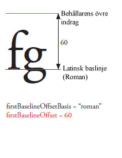
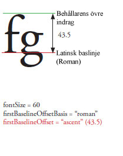
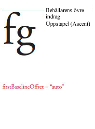
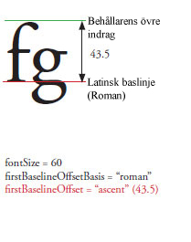
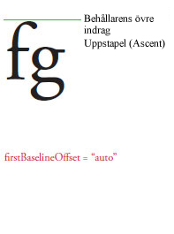

| Paket | fl.text |
| Klass | public class TLFTextField |
| Arv | TLFTextField |
| Språkversion: | ActionScript 3.0 |
| Produktversion: | Flash CS5 |
| Körningsmiljöversioner: | Flash Player 10, AIR 1.5 |
Skapa ett TLFTextField-objekt på samma sätt som du skapar ett textfält med klassen TextField. Använd sedan egenskapen textFlow för att tilldela avancerad formatering från TLF-klasserna. Till exempel:
import fl.text.TLFTextField; import flashx.textLayout.formats.TextLayoutFormat; import flashx.textLayout.elements.TextFlow; var myTLFTextField:TLFTextField = new TLFTextField(); addChild(myTLFTextField); myTLFTextField.x = 10; myTLFTextField.y = 10; myTLFTextField.width = 200 myTLFTextField.height = 100; myTLFTextField.text = "This is my text"; var myFormat:TextLayoutFormat = new TextLayoutFormat(); myFormat.textIndent = 8; myFormat.color = 0x336633; myFormat.fontFamily = "Arial, Helvetica, _sans"; myFormat.fontSize = 24; var myTextFlow:TextFlow = myTLFTextField.textFlow; myTextFlow.hostFormat = myFormat; myTextFlow.flowComposer.updateAllControllers();
Relaterade API-element
 Dölj ärvda publika egenskaper
Dölj ärvda publika egenskaper Visa ärvda publika egenskaper
Visa ärvda publika egenskaper| Egenskap | Definieras med | ||
|---|---|---|---|
 | accessibilityImplementation : AccessibilityImplementation
Den aktuella hjälpmedelsimplementeringen (AccessibilityImplementation) för den här InteractiveObject-instansen. | InteractiveObject | |
| accessibilityProperties : AccessibilityProperties
De nuvarande hjälpmedelsalternativen för det här visningsobjektet. | DisplayObject | |
| alpha : Number
Anger det angivna objektets alfagenomskinlighetsvärde. | DisplayObject | |
| alwaysShowSelection : Boolean
Om inställningen är true och textfältet inte är i fokus markeras markeringen i textfältet med ljusblått i Flash Player. | TLFTextField | ||
| antiAliasType : String
Den typ av kantutjämning som används för det här textfältet. | TLFTextField | ||
| autoSize : String
Styr automatisk storleksinställning och justering av textfält. | TLFTextField | ||
| background : Boolean
Anger om textfältet har en bakgrundsfyllning. | TLFTextField | ||
| backgroundAlpha : Number
Anger alfavärdet för textfältets bakgrund. | TLFTextField | ||
| backgroundColor : uint
Anger färgen på textfältets bakgrund. | TLFTextField | ||
| blendMode : String
Ett värde från klassen BlendMode som anger vilket blandningsläge som ska användas. | DisplayObject | |
| blendShader : Shader [lässkyddad]
Ställer in en skuggning som används för blandning av förgrund och bakgrund. | DisplayObject | |
| blockProgression : Object
Anger en lodrät eller vågrät progression för radplacering. | TLFTextField | ||
| border : Boolean
Anger om textfältet har en kantlinje. | TLFTextField | ||
| borderAlpha : Number
Anger kantens alfavärde. | TLFTextField | ||
| borderColor : uint
Anger färgen på textfältets kant. | TLFTextField | ||
| borderWidth : Number
Anger kantens bredd. | TLFTextField | ||
| bottomScrollV : int [skrivskyddad]
Ett heltal (ett 1-baserat indexvärde) som visar den nedersta raden som är synlig i textfältet som anges. | TLFTextField | ||
| buttonMode : Boolean
Anger knappläge för den här spriten. | Sprite | |
| cacheAsBitmap : Boolean
Om det är true, sparar Flash-miljöerna en intern bitmappsrepresentation av visningsobjektet i cache-minnet. | DisplayObject | |
| cacheAsBitmapMatrix : Matrix
Om detta inte är null definierar det här Matrix-objektet hur ett visningsobjekt återges när cacheAsBitmap har värdet true. | DisplayObject | |
| caretIndex : int [skrivskyddad]
Indexvärdet för inmatningspunkten. | TLFTextField | ||
| columnCount : Object
Antal textkolumner (får standardvärdet om det är odefinierat under överlappning). | TLFTextField | ||
| columnGap : Object
Anger mängden mellanrum (i pixlar) som ska finnas mellan kolumner (får standardvärdet om det är odefinierat under överlappning). | TLFTextField | ||
| columnWidth : Object
Kolumnbredd i pixlar (får standardvärdet om det är odefinierat under överlappning). | TLFTextField | ||
| condenseWhite : Boolean
Ett booleskt värde som anger om extra tomrum (blanksteg, radbrytningar o.s.v.) i ett textfält med HTML-text eller TLF-kod tas bort. | TLFTextField | ||
| constructor : Object
En referens till klassobjektet eller konstruktorfunktionen för en given objektinstans. | Object | |
| contextMenu : NativeMenu
Anger vilken snabbmeny som är associerad med det här objektet. | InteractiveObject | |
| defaultTextFormat : flash.text:TextFormat
Anger vilket format som ska användas för nyinfogad text, till exempel text som anges av en användare eller text som infogas med metoden replaceSelectedText(). | TLFTextField | ||
| direction : String
Anger standardinbäddningsnivån för bidi-text i textblocket. | TLFTextField | ||
| displayAsPassword : Boolean
Anger om textfältet har ett lösenord. | TLFTextField | ||
| doubleClickEnabled : Boolean
Anger om det här objektet tar emot doubleClick-händelser. | InteractiveObject | |
| dropTarget : DisplayObject [skrivskyddad]
Anger det visningsobjekt som spriten dras över, eller som spriten släpptes på. | Sprite | |
| embedFonts : Boolean
Anger om rendering ska göras med inbäddade teckensnittskonturer. | TLFTextField | ||
| filters : Array
En indexerad array som innehåller varje filterobjekt som är associerat med visningsobjektet. | DisplayObject | |
| firstBaselineOffset : Object
Anger baslinjepositionen för den första raden i behållaren. | TLFTextField | ||
| focusRect : Object
Anger om det här objektet visar en fokusram. | InteractiveObject | |
| graphics : Graphics [skrivskyddad]
Anger det Graphics-objekt som tillhör denna sprite där kommandon för vektorritning kan göras. | Sprite | |
| gridFitType : String
Den typ av rutnätspassning som används för det här textfältet. | TLFTextField | ||
| height : Number
Anger visningsobjektets höjd i pixlar. | DisplayObject | |
| hitArea : Sprite
Utser en annan sprite som ska fungera som träffområde för en sprite. | Sprite | |
| htmlText : String
Innehåller HTML-representationen av textfältets innehåll. | TLFTextField | ||
| length : int [skrivskyddad]
Antalet tecken i ett textfält. | TLFTextField | ||
| loaderInfo : LoaderInfo [skrivskyddad]
Returnerar ett LoaderInfo-objekt som innehåller information om hur filen som visningsobjektet tillhör ska läsas in. | DisplayObject | |
| mask : DisplayObject
Det anropande visningsobjektet maskeras av det angivna visningsobjektet. | DisplayObject | |
| maxChars : int
Det maximala antal tecken som en användare kan skriva i textfältet. | TLFTextField | ||
| maxScrollH : int [skrivskyddad]
Maxvärdet för scrollH. | TLFTextField | ||
| maxScrollV : int [skrivskyddad]
Maxvärdet för scrollV. | TLFTextField | ||
| metaData : Object
Erhåller metadataobjektet för instansen DisplayObject om metadata har lagrats tillsammans med instansen för detta DisplayObject i SWF-filen via en PlaceObject4-tagg. | DisplayObject | |
| mouseChildren : Boolean
Avgör om objektets underordnade objekt är aktiverade för en mus eller annan användarindataenhet (eller inte). | DisplayObjectContainer | |
| mouseEnabled : Boolean
Anger om det här objektet tar emot musmeddelanden eller annan indata från användaren. | InteractiveObject | |
| mouseWheelEnabled : Boolean
Ett booleskt värde som anger om Flash Player automatiskt ska rulla textfält med flera rader när användaren klickar i ett textfält och rullar på mushjulet. | TLFTextField | ||
| mouseX : Number [skrivskyddad]
Anger x-koordinaten för musens eller användarens indataenhets position i pixlar. | DisplayObject | |
| mouseY : Number [skrivskyddad]
Anger y-koordinaten för musens eller användarens indataenhets position i pixlar. | DisplayObject | |
| multiline : Boolean
Anger om textfältet har flera rader. | TLFTextField | ||
| name : String
Anger instansnamnet för DisplayObject. | DisplayObject | |
| needsSoftKeyboard : Boolean
Anger om ett virtuellt tangentbord (t.ex. ett skärmtangentbord) ska visas när den här InteractiveObject-instansen är i fokus. | InteractiveObject | |
| numChildren : int [skrivskyddad]
Returnerar antalet underordnade objekt det här objektet har. | DisplayObjectContainer | |
| numLines : int [skrivskyddad]
Definierar antalet textrader i ett textfält med flera rader. | TLFTextField | ||
| opaqueBackground : Object
Anger om visningsobjektet är ogenomskinligt med en viss bakgrundsfärg. | DisplayObject | |
| paddingBottom : Object
Nedre indrag i pixlar (får standardvärdet om det är odefinierat under överlappning). | TLFTextField | ||
| paddingLeft : Object
Vänster indrag i pixlar (får standardvärdet om det är odefinierat under överlappning). | TLFTextField | ||
| paddingRight : Object
Höger indrag i pixlar (får standardvärdet om det är odefinierat under överlappning). | TLFTextField | ||
| paddingTop : Object
Övre indrag i pixlar (får standardvärdet om det är odefinierat under överlappning). | TLFTextField | ||
| parent : DisplayObjectContainer [skrivskyddad]
Anger DisplayObjectContainer-objektet som innehåller visningsobjektet. | DisplayObject | |
| pixelMaxScrollV : int [skrivskyddad]
Det maximala värdet på pixelScrollV. | TLFTextField | ||
| pixelScrollV : int
Den lodräta positionen av texten i ett textfält, i pixlar, till skillnad mot scrollV som är baserad på rader. | TLFTextField | ||
| restrict : String
Anger den teckenuppsättning en användare kan använda för att skriva i textfältet. | TLFTextField | ||
| root : DisplayObject [skrivskyddad]
För ett visningsobjekt i en inläst SWF-fil är rotegenskapen det översta visningsobjektet i den del av visningslistans trädstruktur som representeras av den SWF-filen. | DisplayObject | |
| rotation : Number
Anger DisplayObject-instansens rotation i grader från den ursprungliga orienteringen. | DisplayObject | |
| rotationX : Number
Anger x-axelsrotationen i grader för DisplayObject-instansen, från den ursprungliga orienteringen i förhållande till den överordnade 3D-behållaren. | DisplayObject | |
| rotationY : Number
Anger y-axelsrotationen i grader för DisplayObject-instansen, från den ursprungliga orienteringen i förhållande till den överordnade 3D-behållaren. | DisplayObject | |
| rotationZ : Number
Anger z-axelsrotationen i grader för DisplayObject-instansen, från den ursprungliga orienteringen i förhållande till den överordnade 3D-behållaren. | DisplayObject | |
| scale9Grid : Rectangle
Det skalningsrutnät som används för närvarande. | DisplayObject | |
| scaleX : Number
Anger vågrät skala (i procent) för objektet utifrån dess registreringspunkt. | DisplayObject | |
| scaleY : Number
Anger lodrät skala (i procent) för objektet utifrån dess registreringspunkt. | DisplayObject | |
| scaleZ : Number
Anger djupskala (procent) för objektet utifrån dess registreringspunkt. | DisplayObject | |
| scrollH : int
Den vågräta rullningspositionen. | TLFTextField | ||
| scrollRect : Rectangle
Visningsobjektets gränser för rullningsrektangeln. | DisplayObject | |
| scrollV : int
Den lodräta positionen för texten i ett textfält. | TLFTextField | ||
| selectable : Boolean
Ett booleskt värde som anger om ett textfält är markeringsbart. | TLFTextField | ||
| selectionBeginIndex : int [skrivskyddad]
Det nollbaserade teckenindexvärdet för det första tecknet i den aktuella markeringen. | TLFTextField | ||
| selectionEndIndex : int [skrivskyddad]
Det nollbaserade teckenindexvärdet för det sista tecknet i den aktuella markeringen. | TLFTextField | ||
| sharpness : Number
Skärpa kan inte användas med TLF-textfält. | TLFTextField | ||
| softKeyboard : String
Kontrollerar utseendet på skärmtangentbordet. | InteractiveObject | |
| softKeyboardInputAreaOfInterest : Rectangle
Definierar det område som ska behållas på skärmen när skärmtangentbordet visas (ej tillgängligt på iOS). | InteractiveObject | |
| soundTransform : flash.media:SoundTransform
Styr ljudet i den här spriten. | Sprite | |
| stage : Stage [skrivskyddad]
Visningsobjektets scen. | DisplayObject | |
| styleSheet : StyleSheet
Formatmallar för TLF-textfältet. | TLFTextField | ||
| tabChildren : Boolean
Avgör om objektets underordnade objekt är tabbaktiverade. | DisplayObjectContainer | |
| tabEnabled : Boolean
Anger om det här objektet inkluderas i tabbordningen. | InteractiveObject | |
| tabIndex : int
Anger tabbordningen för objekt i en SWF-fil. | InteractiveObject | |
| text : String
En sträng som utgör den nuvarande texten i textfältet. | TLFTextField | ||
| textColor : uint
Färgen på texten i ett textfält, i hexadecimalt format. | TLFTextField | ||
| textFlow : flashx.textLayout.elements:TextFlow
Använd den här egenskapen för att tilldela formatering från TLF-klasser i flashx-paket till TLFTextField-instansen. | TLFTextField | ||
| textHeight : Number [skrivskyddad]
Textens höjd i pixlar. | TLFTextField | ||
| textSnapshot : flash.text:TextSnapshot [skrivskyddad]
Returnerar ett TextSnapshot-objekt för den här DisplayObjectContainer-instansen. | DisplayObjectContainer | |
| textWidth : Number [skrivskyddad]
Textens bredd i pixlar. | TLFTextField | ||
| thickness : Number
Egenskapen thickness kan inte användas med TLF-textfält. | TLFTextField | ||
| tlfMarkup : String
Anger eller hämtar TLF-koden för texten i TLF-textfältet. | TLFTextField | ||
| transform : flash.geom:Transform
Ett objekt med egenskaper som gäller ett visningsobjekts matris, färgomformning och pixelgränser. | DisplayObject | |
| type : String
Textfältets typ. | TLFTextField | ||
| useHandCursor : Boolean
Ett booleskt värde som anger om den pekande handen (handpekaren) ska visas när pekaren passerar över en sprite, vars buttonMode-egenskap är true. | Sprite | |
| useRichTextClipboard : Boolean
Anger om textens formatering ska kopieras tillsammans med själva texten till Urklipp. | TLFTextField | ||
| verticalAlign : String
Lodrät justering (får standardvärdet om det är odefinierat under överlappning). | TLFTextField | ||
| visible : Boolean
Om visingsobjektet är synligt eller inte. | DisplayObject | |
| width : Number
Anger visningsobjektets bredd i pixlar. | DisplayObject | |
| wordWrap : Boolean
Ett booleskt värde som anger om textfältet har automatisk radbrytning. | TLFTextField | ||
| x : Number
Anger x-koordinaten för DisplayObject-instansen i förhållande till de lokala koordinaterna för den överordnade DisplayObjectContainer. | DisplayObject | |
| y : Number
Anger y-koordinaten för DisplayObject-instansen i förhållande till de lokala koordinaterna för den överordnade DisplayObjectContainer. | DisplayObject | |
| z : Number
Anger z-koordinatens position längs DisplayObject-instansens z-axel i förhållande till den överordnade 3D-behållaren. | DisplayObject | |
| Metod | Definieras med | ||
|---|---|---|---|
Konstruktor för TLFTextField-objekt. | TLFTextField | ||
|
Lägger till en underordnad DisplayObject-instans i den här DisplayObjectContainer-instansen. | DisplayObjectContainer | |
|
Lägger till en underordnad DisplayObject-instans i den här DisplayObjectContainer-instansen. | DisplayObjectContainer | |
| addEventListener(type:String, listener:Function, useCapture:Boolean = false, priority:int = 0, useWeakReference:Boolean = false):void
Registrerar ett händelseavlyssnarobjekt för ett EventDispatcher-objekt så att avlyssnaren får meddelanden om händelser. | EventDispatcher | |
Lägger till strängen som angetts av parametern newText på en del av eller all text i ett textfält. | TLFTextField | ||
|
Anger om säkerhetsrestriktionerna kan göra att visningsobjekt utelämnas från listan som returneras när metoden DisplayObjectContainer.getObjectsUnderPoint() anropas med den angivna punkten. | DisplayObjectContainer | |
|
Avgör om det angivna visningsobjektet är underordnat DisplayObjectContainer-instansen eller själva instansen. | DisplayObjectContainer | |
|
Skickar en händelse till händelseflödet. | EventDispatcher | |
|
Returnerar en rektangel som definierar visningsområdets område i relation till targetCoordinateSpace-objektets koordinatsystem. | DisplayObject | |
Returnerar en rektangel som utgör tecknets begränsningsram. | TLFTextField | ||
Returnerar det nollbaserade indexvärdet för tecknet vid den punkt som anges av parametrarna x och y. | TLFTextField | ||
|
Returnerar den underordnade visningsobjektsinstansen som finns vid det angivna indexvärdet. | DisplayObjectContainer | |
|
Returnerar det underordnade visningsobjektet som har ett visst namn. | DisplayObjectContainer | |
|
Returnerar indexpositionen för en underordnad DisplayObject-instans. | DisplayObjectContainer | |
Returnerar ett givet teckenindexvärde för det första tecknet i samma stycke. | TLFTextField | ||
Returnerar en DisplayObject-referens för det angivna ID:t för en bild eller SWF-fil som har lagts till i ett HTML-formaterat textfält med en <img>-tagg. | TLFTextField | ||
Returnerar det nollbaserade indexvärdet för raden vid den punkt som anges av parametrarna x och y. | TLFTextField | ||
Returnerar det nollbaserade indexvärdet för raden som innehåller tecknet som anges av parametern charIndex. | TLFTextField | ||
Returnerar antalet tecken på en viss textrad. | TLFTextField | ||
Returnerar måttinformation om en viss textram. | TLFTextField | ||
Returnerar teckenindexvärdet för det första tecknet på raden som anges av parametern lineIndex. | TLFTextField | ||
Returnerar texten på raden som anges av parametern lineIndex. | TLFTextField | ||
|
Returnerar en array med objekt som ligger under den angivna punkten och är underordnade (eller indirekt underordnade) den här DisplayObjectContainer-instansen. | DisplayObjectContainer | |
Returnerar längden på det stycke som innehåller ett givet teckenindexvärde. | TLFTextField | ||
|
Returnerar en rektangel som definierar visningsområdets gräns, baserat på koordinatsystemet som definieras av targetCoordinateSpace-parametern, exklusive eventuella linjer i former. | DisplayObject | |
Returnerar ett TextFormat-objekt som innehåller formateringsinformation för textintervallet som anges av parametrarna beginIndex och endIndex. | TLFTextField | ||
|
Konverterar punktobjektet från scenens (globala) koordinater till visningsobjektets (lokala) koordinater. | DisplayObject | |
|
Konverterar en tvådimensionell punkt från scenens (globala) koordinater till ett tredimensionellt visningsobjekts (lokala) koordinater. | DisplayObject | |
|
Kontrollerar om EventDispatcher-objektet har några avlyssnare registrerade för en viss typ av händelse. | EventDispatcher | |
|
Anger om det finns en egenskap angiven för ett objekt. | Object | |
|
Utvärderar begränsningsramen för visningsobjektet för att kontrollera om den överlappar eller korsar begränsningsramen för obj-visningsobjektet. | DisplayObject | |
|
Utvärderar visningsobjektet för att avgöra om det överlappar eller korsar den punkt som anges av x- och y-parametrarna. | DisplayObject | |
Returnerar true om ett inbäddat teckensnitt är tillgängligt med angivet fontName och fontStyle, där Font.fontType är flash.text.FontType.EMBEDDED_CFF. | TLFTextField | ||
|
Anger om en instans av klassen Object finns i prototypkedjan för objektet som anges som parameter. | Object | |
|
Konverterar en tredimensionell punkt för det tredimensionella visningsobjektets (lokala) koordinater till en tvådimensionell punkt i scenens (globala) koordinater. | DisplayObject | |
|
Konverterar punktobjektet från visningsobjektets (lokala) koordinater till scenens (globala) koordinater. | DisplayObject | |
|
Anger om den angivna egenskapen finns och är uppräkningsbar. | Object | |
|
Tar bort den angivna underordnade DisplayObject-instansen från listan med underordnade för DisplayObjectContainer-instansen. | DisplayObjectContainer | |
|
Tar bort ett underordnat DisplayObject från den angivna indexpositionen i den underordnade listan i DisplayObjectContainer. | DisplayObjectContainer | |
|
Tar bort alla child-DisplayObject-instanser från listan med underordnade för DisplayObjectContainer-instansen. | DisplayObjectContainer | |
|
Tar bort en avlyssnare från EventDispatcher-objektet. | EventDispatcher | |
Ersätter markeringen med innehållet i parametern value. | TLFTextField | ||
Ersätter teckenintervallet som anges av parametrarna beginIndex och endIndex med innehållet i parametern newText. | TLFTextField | ||
|
Visar ett virtuellt tangentbord. | InteractiveObject | |
|
Ändrar positionen för ett befintligt underordnat objekt i behållaren för visningsobjekt. | DisplayObjectContainer | |
|
Anger tillgänglighet för en dynamisk egenskap för slingåtgärder. | Object | |
Anges som markerad text som definierats av indexvärdena för det första och sista tecknet, som anges med parametrarna beginIndex och endIndex. | TLFTextField | ||
Använder textformateringen som angetts av formatparametern på den angivna texten i ett textfält. | TLFTextField | ||
|
Gör att användaren kan dra angiven sprite. | Sprite | |
|
Låter användaren dra angiven sprite på en beröringsaktiverad enhet. | Sprite | |
|
Stoppar rekursivt tidslinjekörning av alla filmklipp vars rot är detta objekt. | DisplayObjectContainer | |
|
Avslutar metoden startDrag(). | Sprite | |
|
Avslutar metoden startTouchDrag(), som används med beröringsaktiverade enheter. | Sprite | |
|
Byter z-ordningen (framifrån och bakåt-ordning) för de två underordnade objekten. | DisplayObjectContainer | |
|
Byter z-ordningen (framifrån och bakåt-ordning) för underordnade objekt vid de två angivna indexpositionerna i listan med underordnade objekt. | DisplayObjectContainer | |
|
Returnerar det här objektets strängrepresentation, formaterad i enlighet med språkspecifika konventioner. | Object | |
|
Returnerar det angivna objektets strängbeteckning. | Object | |
|
Returnerar det angivna objektets primitiva värde. | Object | |
|
Kontrollerar om en händelseavlyssnare är registrerad för det här EventDispatcher-objektet eller något av dess överordnade objekt för den angivna händelsetypen. | EventDispatcher | |
| Händelse | Sammanfattning | Definieras med | ||
|---|---|---|---|---|
| [utsändningshändelse] Skickas när Flash Player eller AIR får operativsystemfokus och blir aktivt. | EventDispatcher | ||
| Skickas när ett visningsobjekt läggs till i visningslistan. | DisplayObject | ||
| Skickas när ett visningsobjekt läggs till i scenens visningslista, antingen direkt eller genom tillägg av ett underträd som innehåller visningsobjektet. | DisplayObject | ||
| Skickas efter att ett kontrollvärde har modifierats, till skillnad från textInput-händelsen som skickas innan värdet är modifierat. | TLFTextField | |||
| Skickas när användaren väljer ”Ta bort” på textinnehållsmenyn. | InteractiveObject | ||
| Skickas när en användare trycker ner och släpper upp huvudknappen på sitt pekdon över samma InteractiveObject. | InteractiveObject | ||
| Skickas när en användargest utlöser den snabbmeny som är kopplad till detta interaktiva objekt i ett AIR-program. | InteractiveObject | ||
| Skickas när användaren aktiverar den plattformsspecifika tangentkombinationen för funktionen Kopiera eller väljer ”Kopiera” på snabbmenyn. | InteractiveObject | ||
| Skickas när användaren aktiverar den plattformsspecifika tangentkombinationen för funktionen Klipp ut eller väljer Klipp ut på snabbmenyn. | InteractiveObject | ||
| [utsändningshändelse] Skickas när Flash Player eller AIR förlorar operativsystemfokus och blir inaktivt. | EventDispatcher | ||
| Skickas när en användare trycker ner och släpper upp huvudknappen på ett pekdon två gånger i snabb följd över samma InteractiveObject när detta objekts doubleClickEnabled-flagga är satt till true. | InteractiveObject | ||
| [utsändningshändelse] Skickas när spelhuvudet går in i en ny bildruta. | DisplayObject | ||
| [utsändningshändelse] Skickas när spelhuvudet stänger den aktuella bildrutan. | DisplayObject | ||
| Skickas när ett visningsobjekt fokuserats. | InteractiveObject | ||
| Skickas när ett visningsobjekt tappar fokusering. | InteractiveObject | ||
| [utsändningshändelse] Skickas efter att konstruktorerna för bildrutevisningsobjekt har körts men innan bildruteskript har körts. | DisplayObject | ||
| Skickas när användaren skapar en kontaktpunkt längs pekytans kant med en InteractiveObject-instans (såsom att trycka längs kanten av pekytan på Siri Remote för Apple-TV). Vissa enheter kan också tolka denna kontakt som en kombination av flera pekhändelser. | InteractiveObject | ||
| Skickas när användaren trycker på två kontaktpunkter över samma InteractiveObject-instans på en beröringsaktiverad enhet (som att trycka med två fingrar och sedan släppa dem över ett visningsobjekt på en mobiltelefon eller bärbar dator med pekskärm). | InteractiveObject | ||
| Skickas när användaren flyttar en kontaktpunkt över InteractiveObject-instansen på en beröringsaktiverad enhet (som att flytta ett finger från vänster till höger över ett visningsobjekt på en mobiltelefon eller bärbar dator med pekskärm). | InteractiveObject | ||
| Skickas när användaren utför en rotationsgest vid en kontaktpunkt med en InteractiveObject-instans (som att vidröra en skärm med två fingrar och rotera dem över ett visningsobjekt på en mobiltelefon eller bärbar dator med pekskärm). | InteractiveObject | ||
| Skickas när användaren utför en svepningsgest vid en kontaktpunkt med en InteractiveObject-instans (som att vidröra en skärm med tre fingrar och sedan flytta fingrarna parallellt över ett visningsobjekt på en mobiltelefon eller bärbar dator med pekskärm). | InteractiveObject | ||
| Skickas när användaren skapar en kontaktpunkt med en InteractiveObject-instans och sedan vidrör en beröringsaktiverad enhet (som att placera flera fingrar över ett visningsobjekt för att öppna en meny och sedan använda ett finger för att peka på ett menyalternativ på en mobiltelefon eller bärbar dator med pekskärm). | InteractiveObject | ||
| Skickas när användaren utför en zoomningsgest vid en kontaktpunkt med en InteractiveObject-instans (som att vidröra en skärm med två fingrar och sedan snabbt sära på fingrarna över ett visningsobjekt på en mobiltelefon eller bärbar dator med pekskärm). | InteractiveObject | ||
| Den här händelsen skickas till alla klientprogram som har stöd för indata via ett redigeringsprogram för inmatningsmetoder (IME). | InteractiveObject | ||
| Skickas när användaren trycker på en tangent. | InteractiveObject | ||
| Skickas när användaren försöker att ändra fokuseringen med tangentbordsnavigering. | InteractiveObject | ||
| Skickas när användaren släpper upp en tangent. | InteractiveObject | ||
| Skickas när en användare klickar på en hyperlänk i ett HTML-aktiverat textfält där URL-adressen börjar på "event". | TLFTextField | |||
| Skickas när en användare trycker ned och släpper upp mittenknappen på sitt pekdon över samma InteractiveObject. | InteractiveObject | ||
| Skickas när en användare trycker på pekdonets mittenknapp över en InteractiveObject-instans. | InteractiveObject | ||
| Skickas när en användare släpper pekdonets knapp över en InteractiveObject-instans. | InteractiveObject | ||
| Skickas när en användare trycker på pekdonets knapp över en InteractiveObject-instans. | InteractiveObject | ||
| Skickas när användaren försöker att ändra fokuseringen med ett pekdon. | InteractiveObject | ||
| Skickas när en användare flyttar pekdonet när det befinner sig över ett InteractiveObject. | InteractiveObject | ||
| Skickas när användaren flyttar bort pekdonet från en InteractiveObject-instans. | InteractiveObject | ||
| Skickas när användaren flyttar pekdonet över en InteractiveObject-instans. | InteractiveObject | ||
| Skickas när en användare släpper pekdonets knapp över en InteractiveObject-instans. | InteractiveObject | ||
| Skickas när mushjulet rullas över en InteractiveObject-instans. | InteractiveObject | ||
| Skickas av drag initiator InteractiveObject när användaren släpper dragrörelsen. | InteractiveObject | ||
| Skickas av ett InteractiveObject-målobjekt när ett objekt dras till målobjektet och dragningen har accepterats med ett anrop till DragManager.acceptDragDrop(). | InteractiveObject | ||
| Skickas av ett InteractiveObject-objekt när en dragrörelse går in i dess gränser. | InteractiveObject | ||
| Skickas av ett InteractiveObject-objekt när en dragrörelse går utanför dess gränser. | InteractiveObject | ||
| Skickas kontinuerligt av ett InteractiveObject-objekt när en dragrörelse pågår inom dess gränser. | InteractiveObject | ||
| Skickas i början av en dragning av det InteractiveObject-objekt som anges som dragningsinitierare i DragManager.doDrag()-anropet. | InteractiveObject | ||
| Skickas under en dragning av det InteractiveObject-objekt som anges som dragningsinitierare i DragManager.doDrag()-anropet. | InteractiveObject | ||
| Skickas när användaren aktiverar den plattformsspecifika tangentkombinationen för funktionen Klistra in eller väljer Klistra in på snabbmenyn. | InteractiveObject | ||
| Skickas när användaren sänker en aktiv penna förbi skärmens upptäcktströskel. | InteractiveObject | ||
| Skickas när användaren lyfter en aktiv penna över skärmens upptäcktströskel. | InteractiveObject | ||
| Skickas när användaren flyttar en aktiv penna över skärmen medan den behålls inom skärmens upptäcktströskel. | InteractiveObject | ||
| Skickas när användaren flyttar en aktiv penna bort från detta InteractiveObject medan den behålls inom skärmens upptäcktströskel. | InteractiveObject | ||
| Skickas när användaren flyttar en aktiv penna direkt över detta InteractiveObject medan den behålls inom skärmens upptäcktströskel. | InteractiveObject | ||
| Skickas när användaren flyttar en aktiv penna bort från detta InteractiveObject och något av dess underordnade objekt medan den behålls inom skärmens upptäcktströskel. | InteractiveObject | ||
| Skickas när användaren flyttar en aktiv penna över detta InteractiveObject från utsidan av objektets underordnade träd i visningslistan (men stannar kvar inom skärmens upptäcktströskel). | InteractiveObject | ||
| Skickas när användaren släpper knappen på pekaren efter att första ha tryckt på den över en InteractiveObject-instans och sedan flyttat pekaren bort från InteractiveObject-instansen. | InteractiveObject | ||
| Skickas när ett visningsobjekt ska tas bort från visningslistan. | DisplayObject | ||
| Skickas när ett visningsobjekt ska tas bort från visningslistan, antingen direkt eller genom borttagning av ett underträd som innehåller visningsobjektet. | DisplayObject | ||
| [utsändningshändelse] Skickas när visningslistan ska uppdateras och återges. | DisplayObject | ||
| Skickas när en användare trycker ned och släpper upp högerknappen på sitt pekdon över samma InteractiveObject. | InteractiveObject | ||
| Skickas när en användare trycker på pekdonets knapp över en InteractiveObject-instans. | InteractiveObject | ||
| Skickas när en användare släpper pekdonets knapp över en InteractiveObject-instans. | InteractiveObject | ||
| Skickas när användaren flyttar bort pekdonet från en InteractiveObject-instans. | InteractiveObject | ||
| Skickas när användaren flyttar pekdonet över en InteractiveObject-instans. | InteractiveObject | ||
| Skickas av ett TextField-objekt efter att användaren rullat. | TLFTextField | |||
| Skickas när användaren aktiverar den plattformsspecifika tangentkombinationen för funktionen Markera allt eller väljer Markera allt på snabbmenyn. | InteractiveObject | ||
| Skickas omedelbart efter att skärmtangentbordet tas fram (visas). | InteractiveObject | ||
| Skickas omedelbart innan skärmtangentbordet tas fram (visas). | InteractiveObject | ||
| Skickas omedelbart efter att skärmtangentbordet döljs. | InteractiveObject | ||
| Skickas när värdet på objektets tabChildren-flagga ändras. | InteractiveObject | ||
| Skickas när objektets tabEnabled-flagga ändras. | InteractiveObject | ||
| Skickas när värdet på objektets tabIndex-egenskap ändras. | InteractiveObject | ||
| Flash Player skickar textInput-händelsen när en användare anger ett eller fler texttecken. | TLFTextField | |||
| Skickas när användaren först kontaktar en beröringsaktiverad enhet (som att vidröra en mobiltelefon eller bärbar dator med pekskärm). | InteractiveObject | ||
| Skickas när användaren avslutar kontakten med en beröringsaktiverad enhet (som att lyfta fingret från en mobiltelefon eller bärbar dator med pekskärm). | InteractiveObject | ||
| Skickas när användaren rör enheten och skickas kontinuerligt tills kontaktpunkten avlägsnas. | InteractiveObject | ||
| Skickas när användaren flyttar kontaktpunkten bort från en InteractiveObject-instans på en beröringsaktiverad enhet (som att dra fingret från ett visningsobjekt till ett annat på en mobiltelefon eller bärbar dator med pekskärm). | InteractiveObject | ||
| Skickas när användaren flyttar kontaktpunkten över en InteractiveObject-instans på en beröringsaktiverad enhet (som att dra fingret från en punkt utanför ett visningsobjekt till en punkt över ett visningsobjekt på en mobiltelefon eller bärbar dator med pekskärm). | InteractiveObject | ||
| Skickas när användaren flyttar kontaktpunkten bort från en InteractiveObject-instans på en beröringsaktiverad enhet (som att dra fingret från ett visningsobjekt till en punkt utanför visningsobjektet på en mobiltelefon eller bärbar dator med pekskärm). | InteractiveObject | ||
| Skickas när användaren flyttar kontaktpunkten över en InteractiveObject-instans på en beröringsaktiverad enhet (som att dra fingret från en punkt utanför ett visningsobjekt till en punkt över ett visningsobjekt på en mobiltelefon eller bärbar dator med pekskärm). | InteractiveObject | ||
| Skickas när användaren lyfter kontaktpunkten över samma InteractiveObject-instans där kontakten initierades på en beröringsaktiverad enhet (som att trycka med fingret och sedan släppa det vid en enda kontaktpunkt över ett visningsobjekt på en mobiltelefon eller bärbar dator med pekskärm). | InteractiveObject | ||
alwaysShowSelection | egenskap |
alwaysShowSelection:Boolean| Språkversion: | ActionScript 3.0 |
| Körningsmiljöversioner: | Flash Player 10, AIR 1.5 |
Om inställningen är true och textfältet inte är i fokus markeras markeringen i textfältet med ljusblått i Flash Player. Om inställningen är false och textfältet inte är i fokus markerar Flash Player markeringen i textfältet med grått.
Exempel:
package
{
import flash.display.Sprite;
import fl.text.TLFTextField;
import flash.text.TextFieldType;
public class TLFTextField_alwaysShowSelection extends Sprite
{
public function TLFTextField_alwaysShowSelection()
{
var label1:TLFTextField = createTLFTextField(0, 20, 200, 20);
label1.text = "This text is selected.";
label1.setSelection(0, 9);
label1.alwaysShowSelection = true;
var label2:TLFTextField = createTLFTextField(0, 50, 200, 20);
label2.text = "Drag to select some of this text.";
}
private function createTLFTextField(x:Number, y:Number, width:Number, height:Number):TLFTextField
{
var result:TLFTextField = new TLFTextField();
result.x = x;
result.y = y;
result.width = width;
result.height = height;
addChild(result);
return result;
}
}
}
Standardvärdet är false.
Implementering
public function get alwaysShowSelection():Boolean public function set alwaysShowSelection(value:Boolean):voidRelaterade API-element
antiAliasType | egenskap |
antiAliasType:String| Språkversion: | ActionScript 3.0 |
| Körningsmiljöversioner: | Flash Player 10, AIR 1.5 |
Den typ av kantutjämning som används för det här textfältet. Använd flash.text.AntiAliasType-konstanter för den här egenskapen. Du kan bara styra inställningen om teckensnittet är inbäddat (med egenskapen embedFonts inställd på true).
Använd följande strängvärden när du ska ange värden för den här egenskapen:
| Strängvärde | Beskrivning |
|---|---|
flash.text.AntiAliasType.NORMAL | Använder kantutjämning för vanlig text. Detta motsvarar den typ av kantutjämning som används i Flash Player version 7 och tidigare. |
flash.text.AntiAliasType.ADVANCED | Använder avancerad kantutjämning som gör texten mer läsbar. (Funktionen är tillgänglig i Flash Player 8.) Med avancerad kantutjämning kan typsnitt återges med mycket hög kvalitet för små teckenstorlekar. Detta fungerar bäst i program som innehåller stora mängder med liten text. Avancerad kantutjämning rekommenderas inte för teckensnitt som är större än 48 punkter. |
Standardvärdet är flash.text.AntiAliasType.NORMAL.
Implementering
public function get antiAliasType():String public function set antiAliasType(value:String):voidRelaterade API-element
autoSize | egenskap |
autoSize:String| Språkversion: | ActionScript 3.0 |
| Körningsmiljöversioner: | Flash Player 10, AIR 1.5 |
Styr automatisk storleksinställning och justering av textfält. Tillåtna värden för TextFieldAutoSize-konstanter: TextFieldAutoSize.NONE (standard), TextFieldAutoSize.LEFT, TextFieldAutoSize.RIGHT och TextFieldAutoSize.CENTER.
Om autoSize är inställt på TextFieldAutoSize.NONE (standard) görs ingen storleksändring.
Om autoSize är inställd på TextFieldAutoSize.LEFT behandlas texten som vänsterjusterad text, vilket innebär att den vänstra sidan av textfältet förblir fast och eventuell storleksändring av en enstaka rad i textfältet sker på höger sida. Om texten innehåller en radbrytning (till exempel "\n" eller "\r") ändras storleken på den nedersta delen så att den passar med nästa textrad. Om wordWrap också är inställd på true ändras storleken bara för den nedersta delen av textfältet, medan högersidan förblir fast.
Om autoSize är inställd på TextFieldAutoSize.RIGHT behandlas texten som högerjusterad text, vilket innebär att den högra sidan av textfältet förblir fast och storleksändring av en enstaka rad i textfältet sker på vänster sida. Om texten innehåller en radbrytning (till exempel "\n" eller "\r") ändras storleken på den nedersta delen så att den passar med nästa textrad. Om wordWrap också är inställd på true ändras storleken bara för den nedersta delen av textfältet, medan vänstersidan förblir fast.
Om autoSize är inställd på TextFieldAutoSize.CENTER behandlas texten som centrerad text, vilket innebär att en storleksändring av en enstaka rad i textfältet distribueras jämnt på vänster och höger marginal. Om texten innehåller en radbrytning (till exempel "\n" eller "\r") ändras storleken på den nedersta delen så att den passar med nästa textrad. Om wordWrap också är inställd på true ändras storleken bara för den nedersta delen av textfältet, medan höger och vänster sida förblir fasta.
Implementering
public function get autoSize():String public function set autoSize(value:String):voidUtlöser
ArgumentError — Det angivna autoSize är inte medlem av flash.text.TextFieldAutoSize.
|
Relaterade API-element
background | egenskap |
background:Boolean| Språkversion: | ActionScript 3.0 |
| Körningsmiljöversioner: | Flash Player 10, AIR 1.5 |
Anger om textfältet har en bakgrundsfyllning. Värdet true innebär att textfältet har en bakgrundsfyllning. Värdet false innebär att textfältet inte har någon bakgrundsfyllning. Använd egenskapen backgroundColor för att ställa in bakgrundsfärgen i ett textfält.
Standardvärdet är false.
Implementering
public function get background():Boolean public function set background(value:Boolean):voidRelaterade API-element
backgroundAlpha | egenskap |
backgroundAlpha:Number| Språkversion: | ActionScript 3.0 |
| Körningsmiljöversioner: | Flash Player 10, AIR 1.5 |
Anger alfavärdet för textfältets bakgrund. Alfavärdet för bakgrunden kan anges till värden mellan 0 (osynlig) och 1 (heltäckande). Den här egenskapen kan hämtas eller ställas in, även om det inte finns någon bakgrund, men alfaeffekten är bara synlig om textfältet har egenskapen background inställd på true.
Standardvärdet är 1.0.
Implementering
public function get backgroundAlpha():Number public function set backgroundAlpha(value:Number):voidRelaterade API-element
backgroundColor | egenskap |
backgroundColor:uint| Språkversion: | ActionScript 3.0 |
| Körningsmiljöversioner: | Flash Player 10, AIR 1.5 |
Anger färgen på textfältets bakgrund. Egenskapen kan hämtas eller ställas in, även om det inte finns någon bakgrund, men färgen är bara synlig om textfältet har egenskapen background inställd på true.
Standardvärdet är 0xFFFFFF (white).
Implementering
public function get backgroundColor():uint public function set backgroundColor(value:uint):voidRelaterade API-element
blockProgression | egenskap |
blockProgression:Object| Språkversion: | ActionScript 3.0 |
| Produktversion: | Flash CS5 |
| Körningsmiljöversioner: | Flash Player 10, AIR 1.5 |
Anger en lodrät eller vågrät progression för radplacering. Rader placeras antingen uppifrån och ned (BlockProgression.TB, används för vågrät text) eller från höger till vänster (BlockProgression.RL, används för lodrät text).
Giltiga värden är flashx.textLayout.formats.BlockProgression.RL, flashx.textLayout.formats.BlockProgression.TB, flashx.textLayout.formats.FormatValue.INHERIT.
Om värdet är odefinierat under överlappning ärver den här egenskapen sitt värde från ett överordnat objekt. Om inget överordnat objekt har den här egenskapen får den värdet TB.
Standardvärdet är undefined (indicates not set).
Implementering
public function get blockProgression():Object public function set blockProgression(value:Object):voidRelaterade API-element
border | egenskap |
border:Boolean| Språkversion: | ActionScript 3.0 |
| Körningsmiljöversioner: | Flash Player 10, AIR 1.5 |
Anger om textfältet har en kantlinje. Värdet true innebär att textfältet har en kantlinje. Värdet false innebär att textfältet inte har en kantlinje. Använd egenskapen borderColor för att ställa in kantlinjefärgen.
Standardvärdet är false.
Implementering
public function get border():Boolean public function set border(value:Boolean):voidRelaterade API-element
borderAlpha | egenskap |
borderAlpha:Number| Språkversion: | ActionScript 3.0 |
| Körningsmiljöversioner: | Flash Player 10, AIR 1.5 |
Anger kantens alfavärde. Alfavärdet för kanten kan anges till värden mellan 0 (osynlig) och 1 (heltäckande). Den här egenskapen kan hämtas eller ställas in, även om det inte finns någon kant, men alfaeffekten är bara synlig om textfältet har egenskapen border inställd på true.
Standardvärdet är 1.0.
Implementering
public function get borderAlpha():Number public function set borderAlpha(value:Number):voidRelaterade API-element
borderColor | egenskap |
borderColor:uint| Språkversion: | ActionScript 3.0 |
| Körningsmiljöversioner: | Flash Player 10, AIR 1.5 |
Anger färgen på textfältets kant. Standardvärdet är 0x000000 (svart). Egenskapen kan hämtas eller ställas in, även om det inte finns någon kantlinje, men färgen är bara synlig om textfältet har egenskapen border inställd på true.
Implementering
public function get borderColor():uint public function set borderColor(value:uint):voidRelaterade API-element
borderWidth | egenskap |
borderWidth:Number| Språkversion: | ActionScript 3.0 |
| Körningsmiljöversioner: | Flash Player 10, AIR 1.5 |
Anger kantens bredd. Kantens bredd kan anges till värden mellan 1 och 100. Den här egenskapen kan hämtas eller ställas in, även om det inte finns någon kant, men bredden är bara synlig om textfältet har egenskapen border inställd på true.
Kantens bredd beaktas när textfältets bredd eller höjd ska beräknas. Om du behöver veta textbehållarens bredd eller höjd utan kanten subtraherar du borderWidth från bredd- eller höjdvärdet två gånger.
Exempel: txtHeight = tlf.height - (2 tlf.borderwidth);.
Standardvärdet är 1.
Implementering
public function get borderWidth():Number public function set borderWidth(value:Number):voidRelaterade API-element
bottomScrollV | egenskap |
bottomScrollV:int [skrivskyddad] | Språkversion: | ActionScript 3.0 |
| Körningsmiljöversioner: | Flash Player 10, AIR 1.5 |
Ett heltal (ett 1-baserat indexvärde) som visar den nedersta raden som är synlig i textfältet som anges. Se textfältet som ett fönster på ett textblock. Egenskapen scrollV är det 1-baserade indexet för den översta synliga raden i fönstret och bottomScroll är den sista synliga raden i fönstret.
All text mellan raderna som anges av scrollV och bottomScrollV är synliga i textfältet.
Implementering
public function get bottomScrollV():intRelaterade API-element
caretIndex | egenskap |
caretIndex:int [skrivskyddad] | Språkversion: | ActionScript 3.0 |
| Körningsmiljöversioner: | Flash Player 10, AIR 1.5 |
Indexvärdet för inmatningspunkten. Om ingen inmatningspunkt visas är värdet det läge inmatningspunkten skulle ha om du återställde fokus till fältet (vanligtvis på den plats inmatningspunkten senast var, eller noll om fältet inte haft något fokus).
Index för markeringsomfång är nollbaserade (den första positionen är 0, den andra är 1 och så vidare).
Exempel:
package
{
import flash.display.Sprite;
import flash.events.MouseEvent;
import fl.text.TLFTextField;
import flash.text.TextFieldType;
public class TLFTextField_caretIndex extends Sprite
{
public function TLFTextField_caretIndex()
{
var tlf:TLFTextField = createTLFTextField(10, 10, 100, 100);
tlf.wordWrap = true;
tlf.type = TextFieldType.INPUT;
tlf.text = "Click in this text field. Compare the difference between clicking without selecting versus clicking and selecting text.";
tlf.addEventListener(MouseEvent.CLICK, printCursorPosition);
}
private function printCursorPosition(event:MouseEvent):void
{
var tlf:TLFTextField = TLFTextField(event.currentTarget);
trace("caretIndex:", tlf.caretIndex);
trace("selectionBeginIndex:", tlf.selectionBeginIndex);
trace("selectionEndIndex:", tlf.selectionEndIndex);
}
private function createTLFTextField(x:Number, y:Number, width:Number, height:Number):TLFTextField
{
var result:TLFTextField = new TLFTextField();
result.x = x;
result.y = y;
result.width = width;
result.height = height;
addChild(result);
return result;
}
}
}
Implementering
public function get caretIndex():intRelaterade API-element
columnCount | egenskap |
columnCount:Object| Språkversion: | ActionScript 3.0 |
| Körningsmiljöversioner: | Flash Player 10, AIR 1.5 |
Antal textkolumner (får standardvärdet om det är odefinierat under överlappning). Kolumnantalet åsidosätter andra kolumninställningar. Värdet är ett heltal eller FormatValue.AUTO, om det inte angetts. Om columnCount inte anges används columnWidth för att skapa det antal kolumner som får plats i behållaren.
Giltiga värden som en sträng är flashx.textLayout.formats.FormatValue.AUTO, flashx.textLayout.formats.FormatValue.INHERIT och ints från 1 till 50.
Om värdet är odefinierat under överlappning får den här egenskapen värdet AUTO.
Standardvärdet är undefined (indicates not set).
Implementering
public function get columnCount():Object public function set columnCount(value:Object):voidRelaterade API-element
columnGap | egenskap |
columnGap:Object| Språkversion: | ActionScript 3.0 |
| Körningsmiljöversioner: | Flash Player 10, AIR 1.5 |
Anger mängden mellanrum (i pixlar) som ska finnas mellan kolumner (får standardvärdet om det är odefinierat under överlappning).
Giltiga värden är tal från 0 till 1 000 och flashx.textLayout.formats.FormatValue.INHERIT.
Om värdet är odefinierat under överlappning får den här egenskapen värdet 20.
Standardvärdet är undefined (indicates not set).
Implementering
public function get columnGap():Object public function set columnGap(value:Object):voidRelaterade API-element
columnWidth | egenskap |
columnWidth:Object| Språkversion: | ActionScript 3.0 |
| Produktversion: | Flash CS5 |
| Körningsmiljöversioner: | Flash Player 10, AIR 1.5 |
Kolumnbredd i pixlar (får standardvärdet om det är odefinierat under överlappning). Om du anger bredden på kolumnerna, men inte antalet, skapar TextLayout så många kolumner som möjligt med den bredden, med hänsyn till behållarbredden och columnGap-inställningarna. Eventuellt återstående utrymme placeras efter den sista kolumnen. Värdet är ett tal.
Giltiga värden som en sträng är flashx.textLayout.formats.FormatValue.AUTO, flashx.textLayout.formats.FormatValue.INHERIT och tal från 0 till 8 000.
Om värdet är odefinierat under överlappning får den här egenskapen värdet AUTO.
Standardvärdet är undefined (indicates not set).
Implementering
public function get columnWidth():Object public function set columnWidth(value:Object):voidRelaterade API-element
condenseWhite | egenskap |
condenseWhite:Boolean| Språkversion: | ActionScript 3.0 |
| Produktversion: | Flash CS5 |
| Körningsmiljöversioner: | Flash Player 10, AIR 1.5 |
Ett booleskt värde som anger om extra tomrum (blanksteg, radbrytningar o.s.v.) i ett textfält med HTML-text eller TLF-kod tas bort. Standardvärdet är false. Egenskapen condenseWhite påverkar endast TLF-kod eller text som anges med egenskapen htmlText, inte med egenskapen text. Om du anger text med egenskapen text ignoreras condenseWhite.
Om du ställer in condenseWhite på true måste du använda standard-HTML-taggar, till exempel <br> och <p>, för att placera radbrytningar i textfältet.
Ange egenskapen condenseWhite innan du ställer in egenskapen htmlText eller tlfMarkup.
I följande exempel visas hur du använder egenskapen condenseWhite för att ta bort extra mellanrum från tlfMarkup-innehåll:
import fl.text.TLFTextField; var my_tlf:TLFTextField = new TLFTextField(); my_tlf.autoSize = 'left'; // This line removes white space from tlfMarkup my_tlf.condenseWhite = true; addChild(my_tlf); var my_markup:String = '<TextFlow xmlns="http://ns.adobe.com/textLayout/2008">' + ' <p>' + ' <span>Here is the first span.</span>' + ' \n' + ' <span>And here is the second span.</span>' + ' </p>' + '</TextFlow>'; my_tlf.tlfMarkup = my_markup;
Standardvärdet är false.
Implementering
public function get condenseWhite():Boolean public function set condenseWhite(value:Boolean):voidRelaterade API-element
defaultTextFormat | egenskap |
defaultTextFormat:flash.text:TextFormat| Språkversion: | ActionScript 3.0 |
| Produktversion: | Flash CS5 |
| Körningsmiljöversioner: | Flash Player 10, AIR 1.5 |
Anger vilket format som ska användas för nyinfogad text, till exempel text som anges av en användare eller text som infogas med metoden replaceSelectedText().
Implementering
public function get defaultTextFormat():flash.text:TextFormat public function set defaultTextFormat(value:flash.text:TextFormat):voidRelaterade API-element
direction | egenskap |
direction:String| Språkversion: | ActionScript 3.0 |
| Produktversion: | Flash CS5 |
| Körningsmiljöversioner: | Flash Player 10, AIR 1.5 |
Anger standardinbäddningsnivån för bidi-text i textblocket. Läsriktning från vänster till höger, som i latinsk text, eller från höger till vänster, som i arabiska eller hebreiska. Den här egenskapen påverkar även kolumnriktningen när den används på behållarnivå. Kolumner kan vara från vänster till höger eller från höger till vänster, precis som text. Nedan visas några exempel:

Giltiga värden är flashx.textLayout.formats.Direction.LTR, flashx.textLayout.formats.Direction.RTL, flashx.textLayout.formats.FormatValue.INHERIT.
Om värdet är odefinierat under överlappning ärver den här egenskapen sitt värde från ett överordnat objekt. Om inget överordnat objekt har den här egenskapen får den värdet LTR.
Standardvärdet är undefined (indicates not set).
Implementering
public function get direction():String public function set direction(value:String):voidRelaterade API-element
displayAsPassword | egenskap |
displayAsPassword:Boolean| Språkversion: | ActionScript 3.0 |
| Produktversion: | Flash CS5 |
| Körningsmiljöversioner: | Flash Player 10, AIR 1.5 |
Anger om textfältet har ett lösenord. Om värdet för egenskapen är true behandlas textfältet som ett password-textfält som döljer inmatningstecknen med asterisker i stället för de riktiga tecknen. Värdet false innebär att textfältet inte behandlas som ett password-textfält. När password-läget är aktiverat fungerar inte kommandona Klipp ut och Klistra in eller deras motsvarande kortkommandon. Den här säkerhetstekniken förebygger att obehöriga användare använder genvägar för att ta reda på ett lösenord på en dator som är obevakad.
Standardvärdet är false.
Implementering
public function get displayAsPassword():Boolean public function set displayAsPassword(value:Boolean):voidembedFonts | egenskap |
embedFonts:Boolean| Språkversion: | ActionScript 3.0 |
| Produktversion: | Flash CS5 |
| Körningsmiljöversioner: | Flash Player 10, AIR 1.5 |
Anger om rendering ska göras med inbäddade teckensnittskonturer. Om det är false visar Flash Player textfältet med enhetens teckensnitt.
Om du ställer in egenskapen embedFonts på true för ett textfält måste du ange ett teckensnitt för den texten med hjälp av font-egenskapen i ett TextFormat-objekt som tillämpas på textfältet. Om det angivna teckensnittet inte är inbäddat i SWF-filen visas texten med ett reservteckensnitt.
Standardvärdet är false.
Implementering
public function get embedFonts():Boolean public function set embedFonts(value:Boolean):voidRelaterade API-element
firstBaselineOffset | egenskap |
firstBaselineOffset:Object| Språkversion: | ActionScript 3.0 |
| Produktversion: | Flash CS5 |
| Körningsmiljöversioner: | Flash Player 10, AIR 1.5 |
Anger baslinjepositionen för den första raden i behållaren. Vilken baslinje den här egenskapen hänvisar till beror på språkområdet på behållarnivå. För japanska och kinesiska är det TextBaseline.IDEOGRAPHIC_BOTTOM. För alla andra är det TextBaseline.ROMAN. Förskjutningen från det översta indraget (eller höger indrag om blockProgression är RL) i behållaren till den första radens baslinje kan vara antingen BaselineOffset.ASCENT, vilket är lika med radens uppstapel, BaselineOffset.LINE_HEIGHT, vilket är lika med höjden på den första raden, eller ett fast värde som anger ett absolut avstånd. BaselineOffset.AUTO justerar radens uppstapel mot behållarens översta indrag.
 

Giltiga värden som en sträng är flashx.textLayout.formats.BaselineOffset.AUTO, flashx.textLayout.formats.BaselineOffset.ASCENT, flashx.textLayout.formats.BaselineOffset.LINE_HEIGHT, flashx.textLayout.formats.FormatValue.INHERIT och tal från 0 till 1 000.
Om värdet är odefinierat under överlappning ärver den här egenskapen sitt värde från ett överordnat objekt. Om inget överordnat objekt har den här egenskapen får den värdet AUTO.
Standardvärdet är undefined (indicates not set).
Implementering
public function get firstBaselineOffset():Object public function set firstBaselineOffset(value:Object):voidRelaterade API-element
gridFitType | egenskap |
gridFitType:String| Språkversion: | ActionScript 3.0 |
| Produktversion: | Flash CS5 |
| Körningsmiljöversioner: | Flash Player 10, AIR 1.5 |
Den typ av rutnätspassning som används för det här textfältet. Den här egenskapen gäller bara om textfältets flash.text.AntiAliasType-egenskap är inställd på flash.text.AntiAliasType.ADVANCED.
Den typ av rutnätspassning som används avgör om Flash Player tvingar tydliga vågräta och lodräta rader att passa till ett pixel- eller delpixelrutnät, eller inte alls.
För egenskapen flash.text.GridFitType kan du använda följande strängvärden:
| Strängvärde | Beskrivning |
|---|---|
flash.text.GridFitType.NONE | Ingen rutnätspassning används. Vågräta och lodräta linjer i glyferna tvingas inte till pixelrutnätet. Den här inställningen rekommenderas för animering och för stora teckenstorlekar. |
flash.text.GridFitType.PIXEL | Anger att tydliga vågräta och lodräta linjer ska passas till rutnätet. Inställningen fungerar endast för vänsterjusterade textfält. Om du vill använda den här inställningen måste textfältets flash.dispaly.AntiAliasType-egenskap vara inställd på flash.text.AntiAliasType.ADVANCED. Inställningen ger normalt den bästa läsbarheten för vänsterjusterad text. |
flash.text.GridFitType.SUBPIXEL | Anger att tydliga vågräta och lodräta linjer passas till delpixelrutnätet på en LCD-skärm. Om du vill använda den här inställningen måste textfältets flash.text.AntiAliasType-egenskap vara inställd på flash.text.AntiAliasType.ADVANCED. Inställningen flash.text.GridFitType.SUBPIXEL rekommenderas vid högerjusterad och centrerad dynamisk text. Detta är ibland en praktisk kompromiss mellan animering och textkvalitet. |
Standardvärdet är flash.text.GridFitType.PIXEL.
Implementering
public function get gridFitType():String public function set gridFitType(value:String):voidRelaterade API-element
htmlText | egenskap |
htmlText:String| Språkversion: | ActionScript 3.0 |
| Produktversion: | Flash CS5 |
| Körningsmiljöversioner: | Flash Player 10, AIR 1.5 |
Innehåller HTML-representationen av textfältets innehåll.
I TLFTextField-instanser finns stöd för följande HTML-taggar:
| Tagg | Beskrivning |
|---|---|
| Ankartagg |
Med <a>-taggen skapas en hypertextlänk och den används med följande attribut:
|
| Tagg för fetstil |
Taggen <b> visar text i fetstil. Det måste finnas ett tillgängligt typsnitt för fetstil.
|
| Tagg för radbrytning |
Med <br>-taggen skapas en radbrytning i texten.
|
| Tagg för teckensnitt |
Med <font>-taggen anges ett teckensnitt eller lista med flera teckensnitt för textvisningen. Teckensnittstaggen kan användas med följande attribut:
|
| Tagg för bild |
Med <img>-taggen bäddar du in externa bildfiler (JPEG, GIF, PNG), SWF-filer och filmklipp i texten.
Obs! Till skillnad från klassen TextField stöds inte följande attribut: |
| Tagg för kursiv text |
Taggen <i> visar texten i kursiv stil. Det måste finnas ett tillgängligt teckensnitt för kursiv text.
|
| Tagg för punktlista | Obs! Till skillnad från klassen TextField stöds taggen för punktlista inte. |
| Tagg för stycke |
Med <p>-taggen skapar du ett nytt stycke. <p>-taggen kan användas med följande attribut:
|
| Tagg för textspann |
<span>-taggen kan användas med följande attribut:
|
| Tagg för textformat |
Med
|
| Tagg för understruken text |
Taggen <u> visar texten understruken.
|
I Flash stöds även explicita teckenkoder, t.ex. & (et-tecken, ASCII) och € (Unicode, €-symbol).
Implementering
public function get htmlText():String public function set htmlText(value:String):voidRelaterade API-element
length | egenskap |
maxChars | egenskap |
maxChars:int| Språkversion: | ActionScript 3.0 |
| Produktversion: | Flash CS5 |
| Körningsmiljöversioner: | Flash Player 10, AIR 1.5 |
Det maximala antal tecken som en användare kan skriva i textfältet. Ett skript kan infoga mer text än vad maxChars tillåter. Egenskapen maxChars visar bara hur mycket text som en användare kan ange. Om värdet för den här egenskapen är 0 finns det ingen gräns för hur mycket text som en användare kan ange.
Standardvärdet är 0.
Implementering
public function get maxChars():int public function set maxChars(value:int):voidmaxScrollH | egenskap |
maxScrollV | egenskap |
mouseWheelEnabled | egenskap |
mouseWheelEnabled:Boolean| Språkversion: | ActionScript 3.0 |
| Produktversion: | Flash CS5 |
| Körningsmiljöversioner: | Flash Player 10, AIR 1.5 |
Ett booleskt värde som anger om Flash Player automatiskt ska rulla textfält med flera rader när användaren klickar i ett textfält och rullar på mushjulet. Egenskapen är användbar om du vill förhindra att mushjulet rullar textfält eller om du vill implementera egen rullning av textfält.
Standardvärdet är true.
Implementering
public function get mouseWheelEnabled():Boolean public function set mouseWheelEnabled(value:Boolean):voidmultiline | egenskap |
multiline:Boolean| Språkversion: | ActionScript 3.0 |
| Produktversion: | Flash CS5 |
| Körningsmiljöversioner: | Flash Player 10, AIR 1.5 |
Anger om textfältet har flera rader. Om värdet är true har textfältet flera rader. Om värdet är false har textfältet en rad. I ett fält av typen TextFieldType.INPUT avgör värdet multiline om Enter-tangenten skapar en ny rad (om värdet är false ignoreras Enter-tangenten). Om du klistrar in text i TextField med ett multiline-värde som är false tas nya rader bort ur texten.
Standardvärdet är false.
Implementering
public function get multiline():Boolean public function set multiline(value:Boolean):voidRelaterade API-element
numLines | egenskap |
numLines:int [skrivskyddad] | Språkversion: | ActionScript 3.0 |
| Produktversion: | Flash CS5 |
| Körningsmiljöversioner: | Flash Player 10, AIR 1.5 |
Definierar antalet textrader i ett textfält med flera rader. Om wordWrap-egenskapen är inställd på true ökar antalet rader när texten figursätts.
Implementering
public function get numLines():intRelaterade API-element
paddingBottom | egenskap |
paddingBottom:Object| Språkversion: | ActionScript 3.0 |
| Produktversion: | Flash CS5 |
| Körningsmiljöversioner: | Flash Player 10, AIR 1.5 |
Nedre indrag i pixlar (får standardvärdet om det är odefinierat under överlappning). Avståndet mellan behållarens nedre kant och texten. Värdet är ett tal.
Med vågrät text, i rullningsbara behållare med flera kolumner, visas utfyllnaden i den första kolumnen och efterföljande kolumner som ett tomt område längst ned i behållaren. I den sista kolumnen kanske du måste rulla för att se utfyllnaden om all text inte får plats.
Giltiga värden är tal från 0 till 1 000 och flashx.textLayout.formats.FormatValue.INHERIT.
Om värdet är odefinierat under överlappning får den här egenskapen värdet 0.
Standardvärdet är undefined (indicates not set).
Implementering
public function get paddingBottom():Object public function set paddingBottom(value:Object):voidRelaterade API-element
paddingLeft | egenskap |
paddingLeft:Object| Språkversion: | ActionScript 3.0 |
| Produktversion: | Flash CS5 |
| Körningsmiljöversioner: | Flash Player 10, AIR 1.5 |
Vänster indrag i pixlar (får standardvärdet om det är odefinierat under överlappning). Avståndet mellan behållarens vänstra kant och texten. Värdet är ett tal.
Med lodrät text, i rullningsbara behållare med flera kolumner, visas utfyllnaden i den första kolumnen och efterföljande kolumner som ett tomt område i slutet av behållaren, men i den sista kolumnen kan du behöva rulla för att se utfyllnaden om all text inte får plats.
Giltiga värden är tal från 0 till 1 000 och flashx.textLayout.formats.FormatValue.INHERIT.
Om värdet är odefinierat under överlappning får den här egenskapen värdet 0.
Standardvärdet är undefined (indicates not set).
Implementering
public function get paddingLeft():Object public function set paddingLeft(value:Object):voidRelaterade API-element
paddingRight | egenskap |
paddingRight:Object| Språkversion: | ActionScript 3.0 |
| Produktversion: | Flash CS5 |
| Körningsmiljöversioner: | Flash Player 10, AIR 1.5 |
Höger indrag i pixlar (får standardvärdet om det är odefinierat under överlappning). Avståndet mellan behållarens högra kant och texten. Värdet är ett tal.
Giltiga värden är tal från 0 till 1 000 och flashx.textLayout.formats.FormatValue.INHERIT.
Om värdet är odefinierat under överlappning får den här egenskapen värdet 0.
Standardvärdet är undefined (indicates not set).
Implementering
public function get paddingRight():Object public function set paddingRight(value:Object):voidRelaterade API-element
paddingTop | egenskap |
paddingTop:Object| Språkversion: | ActionScript 3.0 |
| Produktversion: | Flash CS5 |
| Körningsmiljöversioner: | Flash Player 10, AIR 1.5 |
Övre indrag i pixlar (får standardvärdet om det är odefinierat under överlappning). Avståndet mellan behållarens övre kant och texten. Värdet är ett tal.
Giltiga värden är tal från 0 till 1 000 och flashx.textLayout.formats.FormatValue.INHERIT.
Om värdet är odefinierat under överlappning får den här egenskapen värdet 0.
Standardvärdet är undefined (indicates not set).
Implementering
public function get paddingTop():Object public function set paddingTop(value:Object):voidRelaterade API-element
passwordCharacter | egenskap |
passwordCharacter:String [skrivskyddad] Hämtar eller anger tecknet som används för att dölja tecken i ett lösenordsblock.
Implementering
tlf_internal function get passwordCharacter():StringpixelMaxScrollV | egenskap |
pixelMaxScrollV:int [skrivskyddad] | Språkversion: | ActionScript 3.0 |
| Produktversion: | Flash CS5 |
| Körningsmiljöversioner: | Flash Player 10, AIR 1.5 |
Det maximala värdet på pixelScrollV. Enheten för pixelMaxScrollV är pixlar, till skillnad mot maxScrollV-egenskapen som är radbaserad.
Implementering
public function get pixelMaxScrollV():intpixelScrollV | egenskap |
pixelScrollV:int| Språkversion: | ActionScript 3.0 |
| Produktversion: | Flash CS5 |
| Körningsmiljöversioner: | Flash Player 10, AIR 1.5 |
Den lodräta positionen för texten i ett textfält, i pixlar, till skillnad för scrollVsom är baserade på rader. Egenskapen pixelScrollV är lämplig för mjuk rullning av ett textField till en speciell position.
Implementering
public function get pixelScrollV():int public function set pixelScrollV(value:int):voidRelaterade API-element
restrict | egenskap |
restrict:String| Språkversion: | ActionScript 3.0 |
| Produktversion: | Flash CS5 |
| Körningsmiljöversioner: | Flash Player 10, AIR 1.5 |
Anger den teckenuppsättning en användare kan använda för att skriva i textfältet. Om värdet för egenskapen restrict är null kan du skriva vilket tecken som helst. Om värdet för egenskapen restrict är en tom sträng kan du inte skriva vilket tecken som helst. Om värdet för restrict-egenskapen är en teckensträng kan du bara ange tecknen i strängen i textfältet. Strängen läses från vänster till höger. Du kan ange intervall med hjälp av bindestreck (-). Endast användarinteraktionen är begränsad; ett skript kan lägga in alla slags texter i textfältet. Egenskapen synkroniseras inte med alternativen Bädda in teckensnittskonturer i egenskapsinspektören.
Om strängen börjar med cirkumflexen (^) accepteras alla tecken utom de som anges i strängen. Om strängen inte börjar med cirkumflexen (^) accepteras bara de tecken som anges i strängen.
I följande exempel tillåts bara att stora bokstäver, mellanslag och siffror i ett textfält:
my_txt.restrict = "A-Z 0-9";
I följande exempel tillåts alla tecken utom små bokstäver:
my_txt.restrict = "^a-z";
Du kan använda omvänt snedstreck för att ange ett ^ eller - ordagrant. Sekvenserna med omvänt snedstreck är \-, \^ eller \\. Det omvända snedsträcket måste vara ett faktiskt tecken i strängen. Två omvända snedstreck måste användas i ActionScript. I följande kod finns bara strecket (-) och cirkumflexen (^):
my_txt.restrict = "\\-\\^";
^ kan användas var som helst i strängen för att växla mellan att inkludera och exkludera tecken. I följande exempel tillåts bara stora bokstäver, men stora Q utesluts:
my_txt.restrict = "A-Z^Q";
Du kan använda escape-sekvensen \u för att skapa restrict-strängar. I följande kod inkluderas bara tecknen från ASCII 32 (mellanslag) till ASCII 126 (tilde).
my_txt.restrict = "\u0020-\u007E";
Standardvärdet är null.
Implementering
public function get restrict():String public function set restrict(value:String):voidscrollH | egenskap |
scrollH:int| Språkversion: | ActionScript 3.0 |
| Produktversion: | Flash CS5 |
| Körningsmiljöversioner: | Flash Player 10, AIR 1.5 |
Den vågräta rullningspositionen. Om egenskapen scrollH är 0 rullas inte texten vågrätt. Egenskapsvärdet är ett heltal som representerar den vågräta positionen i pixlar.
Enheten för vågrät rullning är pixlar, medan enheten för lodrät rullning är rader. Vågrät rullning mäts i pixlar, eftersom de flesta teckensnitten som du använder har proportionella mellanrum. Det innebär att tecknen kan ha olika bredd. Flash Player utför lodrät rullning efter rad, eftersom användare vanligtvis vill se en hel textrad i stället för en ofullständig rad. Även om det finns flera teckensnitt på en rad anpassas radens höjd för att passa det största teckensnittet som används.
Obs! Egenskapen scrollH är nollbaserad, inte ettbaserad som den lodräta rullningsegenskapen scrollV.
Implementering
public function get scrollH():int public function set scrollH(value:int):voidRelaterade API-element
scrollV | egenskap |
scrollV:int| Språkversion: | ActionScript 3.0 |
| Produktversion: | Flash CS5 |
| Körningsmiljöversioner: | Flash Player 10, AIR 1.5 |
Den lodräta positionen för texten i ett textfält. Egenskapen scrollV är användbar när användare vill hitta ett visst stycke i en lång text eller ska skapa rullningsbara textfält.
Enheten för lodrät rullning är rader, medan enheten för vågrät rullning är pixlar. Om den första visade raden är den första raden i textfältet ställs scrollV in på 1 (inte 0). Vågrät rullning mäts i pixlar, eftersom de flesta teckensnitten har proportionella mellanrum. Det innebär att tecknen kan ha olika bredd. Flash utför lodrät rullning efter rad, eftersom användare vanligtvis vill se en hel textrad i stället för en ofullständig rad. Även om det finns flera teckensnitt på en rad anpassas radens höjd för att passa det största teckensnittet som används.
Implementering
public function get scrollV():int public function set scrollV(value:int):voidRelaterade API-element
selectable | egenskap |
selectable:Boolean| Språkversion: | ActionScript 3.0 |
| Produktversion: | Flash CS5 |
| Körningsmiljöversioner: | Flash Player 10, AIR 1.5 |
Ett booleskt värde som anger om ett textfält är markeringsbart. Värdet true anger att texten är markeringsbar. Egenskapen selectable styr om ett textfält kan markeras, inte om det kan redigeras. Till skillnad från ett klassiskt, dynamiskt textfält eller ett indatatextfält kan ett TLF-textfält alltid markeras om det kan redigeras. Om den här egenskapen är inställd på false, och indatatypen är dynamisk, kan användaren inte markera texten.
Om selectable är inställt på false svarar inte texten i textfältet på markeringskommandon från musen eller tangentbordet, och texten kan inte kopieras med hjälp av kommandot Kopiera. Om selectable är inställt på true kan texten i textfältet markeras med musen eller tangentbordet, och texten kan kopieras med hjälp av kommandot Kopiera.
Standardvärdet är true.
Implementering
public function get selectable():Boolean public function set selectable(value:Boolean):voidRelaterade API-element
selectionBeginIndex | egenskap |
selectionBeginIndex:int [skrivskyddad] | Språkversion: | ActionScript 3.0 |
| Produktversion: | Flash CS5 |
| Körningsmiljöversioner: | Flash Player 10, AIR 1.5 |
Det nollbaserade teckenindexvärdet för det första tecknet i den aktuella markeringen. Det första tecknet är 0, det andra 1 och så vidare. Om ingen text är markerad är värdet för den här egenskapen caretIndex.
Implementering
public function get selectionBeginIndex():intRelaterade API-element
selectionEndIndex | egenskap |
selectionEndIndex:int [skrivskyddad] | Språkversion: | ActionScript 3.0 |
| Produktversion: | Flash CS5 |
| Körningsmiljöversioner: | Flash Player 10, AIR 1.5 |
Det nollbaserade teckenindexvärdet för det sista tecknet i den aktuella markeringen. Det första tecknet är 0, det andra 1 och så vidare. Om ingen text är markerad är värdet för den här egenskapen caretIndex.
Implementering
public function get selectionEndIndex():intRelaterade API-element
sharpness | egenskap |
sharpness:Number| Språkversion: | ActionScript 3.0 |
| Produktversion: | Flash CS5 |
| Körningsmiljöversioner: | Flash Player 10, AIR 1.5 |
Skärpa kan inte användas med TLF-textfält. Alla skickade värden ignoreras och noll returneras alltid.
Implementering
public function get sharpness():Number public function set sharpness(value:Number):voidstyleSheet | egenskap |
styleSheet:StyleSheet| Språkversion: | ActionScript 3.0 |
| Produktversion: | Flash CS5 |
| Körningsmiljöversioner: | Flash Player 10, AIR 1.5 |
Formatmallar för TLF-textfältet.
Implementering
public function get styleSheet():StyleSheet public function set styleSheet(value:StyleSheet):voidtext | egenskap |
text:String| Språkversion: | ActionScript 3.0 |
| Produktversion: | Flash CS5 |
| Körningsmiljöversioner: | Flash Player 10, AIR 1.5 |
En sträng som utgör den nuvarande texten i textfältet. Rader avgränsas med vagnreturtecknet ('\r', ASCII 13). Den här egenskapen innehåller oformaterad text i textfältet utan HTML-taggar.
Om du vill hämta texten i HTML-format använder du egenskapen htmlText.
Implementering
public function get text():String public function set text(value:String):voidRelaterade API-element
textColor | egenskap |
textColor:uint| Språkversion: | ActionScript 3.0 |
| Produktversion: | Flash CS5 |
| Körningsmiljöversioner: | Flash Player 10, AIR 1.5 |
Färgen på texten i ett textfält, i hexadecimalt format. I det hexadecimala färgsystemet används sex siffror som representerar färgvärden. Varje siffra har 16 möjliga värden eller tecken. Teckenintervallet går från 0 till -9 och sedan från A till F. Svart är till exempel 0x000000 och vitt är 0xFFFFFF.
Standardvärdet är 0 (0x000000).
Implementering
public function get textColor():uint public function set textColor(value:uint):voidtextFlow | egenskap |
textFlow:flashx.textLayout.elements:TextFlow| Språkversion: | ActionScript 3.0 |
| Produktversion: | Flash CS5 |
| Körningsmiljöversioner: | Flash Player 10, AIR 1.5 |
Använd den här egenskapen för att tilldela formatering från TLF-klasser i flashx-paket till TLFTextField-instansen. Till exempel:
var myFormat:TextLayoutFormat = new TextLayoutFormat(); myFormat.textIndent = 8; myFormat.color = 0x336633; myFormat.fontFamily = "Arial, Helvetica, _sans"; myFormat.fontSize = 24; var myTextFlow:TextFlow = myTLFTextField.textFlow; myTextFlow.hostFormat = myFormat;
Implementering
public function get textFlow():flashx.textLayout.elements:TextFlow public function set textFlow(value:flashx.textLayout.elements:TextFlow):voidRelaterade API-element
textHeight | egenskap |
textWidth | egenskap |
thickness | egenskap |
thickness:Number| Språkversion: | ActionScript 3.0 |
| Produktversion: | Flash CS5 |
| Körningsmiljöversioner: | Flash Player 10, AIR 1.5 |
Egenskapen thickness kan inte användas med TLF-textfält. Alla skickade värden ignoreras och noll returneras alltid.
Implementering
public function get thickness():Number public function set thickness(value:Number):voidtlfMarkup | egenskap |
tlfMarkup:String| Språkversion: | ActionScript 3.0 |
| Produktversion: | Flash CS5 |
| Körningsmiljöversioner: | Flash Player 10, AIR 1.5 |
Anger eller hämtar TLF-koden för texten i TLF-textfältet.
Formateringsspecifikationerna finns på http://sourceforge.net/projects/tlf.adobe/files/docs/TLF_2.0_specification.pdf/download.
Implementering
public function get tlfMarkup():String public function set tlfMarkup(value:String):voidRelaterade API-element
type | egenskap |
type:String| Språkversion: | ActionScript 3.0 |
| Produktversion: | Flash CS5 |
| Körningsmiljöversioner: | Flash Player 10, AIR 1.5 |
Textfältets typ. Någon av följande TextFieldType-konstanter: TextFieldType.DYNAMIC, som anger ett markeringsbart TLF-textfält som användaren inte kan redigera, eller TextFieldType.INPUT, som anger ett redigeringsbart TLF-textfält som användaren kan redigera.
Standardvärdet är dynamic.
Implementering
public function get type():String public function set type(value:String):voidUtlöser
ArgumentError — Det angivna type är inte medlem av flash.text.TextFieldType.
|
Relaterade API-element
useRichTextClipboard | egenskap |
useRichTextClipboard:Boolean| Språkversion: | ActionScript 3.0 |
| Produktversion: | Flash CS5 |
| Körningsmiljöversioner: | Flash Player 10, AIR 1.5 |
Anger om textens formatering ska kopieras tillsammans med själva texten till Urklipp. När värdet är true kopieras formateringen (t.ex. justering, fetstil eller kursiv stil) till Urklipp i tlfMarkup-format.
Standardvärdet är false.
Implementering
public function get useRichTextClipboard():Boolean public function set useRichTextClipboard(value:Boolean):voidRelaterade API-element
verticalAlign | egenskap |
verticalAlign:String| Språkversion: | ActionScript 3.0 |
| Produktversion: | Flash CS5 |
| Körningsmiljöversioner: | Flash Player 10, AIR 1.5 |
Lodrät justering (får standardvärdet om det är odefinierat under överlappning). Avgör hur TextFlow-element justeras inuti behållaren.
Giltiga värden är flashx.textLayout.formats.VerticalAlign.TOP, flashx.textLayout.formats.VerticalAlign.MIDDLE, flashx.textLayout.formats.VerticalAlign.BOTTOM, flashx.textLayout.formats.VerticalAlign.JUSTIFY, flashx.textLayout.formats.FormatValue.INHERIT.
Om värdet är odefinierat under överlappning får den här egenskapen värdet TOP.
Standardvärdet är undefined (indicates not set).
Implementering
public function get verticalAlign():String public function set verticalAlign(value:String):voidRelaterade API-element
wordWrap | egenskap |
wordWrap:Boolean| Språkversion: | ActionScript 3.0 |
| Produktversion: | Flash CS5 |
| Körningsmiljöversioner: | Flash Player 10, AIR 1.5 |
Ett booleskt värde som anger om textfältet har automatisk radbrytning. Om värdet för wordWrap är true innehåller textfältet automatisk radbrytning. Är värdet false innehåller textfältet inte automatisk radbrytning.
Standardvärdet är false.
Implementering
public function get wordWrap():Boolean public function set wordWrap(value:Boolean):voidRelaterade API-element
TLFTextField | () | Konstruktor |
public function TLFTextField()| Språkversion: | ActionScript 3.0 |
| Produktversion: | Flash CS5 |
| Körningsmiljöversioner: | Flash Player 10, AIR 1.5 |
Konstruktor för TLFTextField-objekt. Skapa ett TLFTextField-objekt på samma sätt som du skapar ett textfält med klassen TextField, men använd konstruktorn TLFTextField() i stället. Till exempel:
var myTLFTextField:TLFTextField = new TLFTextField();
Relaterade API-element
appendText | () | metod |
public function appendText(newText:String):void| Språkversion: | ActionScript 3.0 |
| Produktversion: | Flash CS5 |
| Körningsmiljöversioner: | Flash Player 10, AIR 1.5 |
Lägger till strängen som angetts av parametern newText på en del av eller all text i ett textfält. Den här metoden är effektivare än additionstilldelning (+=) på en text-egenskap (t.ex. someTextField.text += moreText), särskilt för ett textfält med mycket innehåll.
Parametrar
newText:String — Den sträng som ska läggas till i den befintliga texten.
|
createTextLayoutFormat | () | metod |
tlf_internal static function createTextLayoutFormat(format:flash.text:TextFormat):flashx.textLayout.formats:TextLayoutFormatParametrar
format:flash.text:TextFormat |
flashx.textLayout.formats:TextLayoutFormat |
getCharBoundaries | () | metod |
public function getCharBoundaries(charIndex:int):Rectangle| Språkversion: | ActionScript 3.0 |
| Produktversion: | Flash CS5 |
| Körningsmiljöversioner: | Flash Player 10, AIR 1.5 |
Returnerar en rektangel som utgör tecknets begränsningsram.
Parametrar
charIndex:int — Det nollbaserade indexvärdet för tecknet (den första positionen är 0, den andra är 1 och så vidare).
|
Rectangle — En rektangel med de lägsta och högsta x- ochy-värdena som definierar tecknets begränsningsram.
|
Relaterade API-element
getCharIndexAtPoint | () | metod |
public function getCharIndexAtPoint(x:Number, y:Number):int| Språkversion: | ActionScript 3.0 |
| Produktversion: | Flash CS5 |
| Körningsmiljöversioner: | Flash Player 10, AIR 1.5 |
Returnerar det nollbaserade indexvärdet för tecknet vid den punkt som anges av parametrarna x och y.
Parametrar
x:Number — Tecknets x-koordinat.
| |
y:Number — Tecknets y-koordinat.
|
int — Det nollbaserade indexvärdet för tecknet (den första positionen är 0, den andra är 1 och så vidare). Returnerar -1 om punkten inte ligger över ett tecken.
|
getFirstCharInParagraph | () | metod |
public function getFirstCharInParagraph(charIndex:int):int| Språkversion: | ActionScript 3.0 |
| Produktversion: | Flash CS5 |
| Körningsmiljöversioner: | Flash Player 10, AIR 1.5 |
Returnerar ett givet teckenindexvärde för det första tecknet i samma stycke.
Parametrar
charIndex:int — Det nollbaserade indexvärdet för tecknet (det första tecknet är 0, det andra är 1 och så vidare).
|
int — Det nollbaserade indexvärdet för det första tecknet i samma stycke.
|
Utlöser
RangeError — Det angivna teckenindexvärdet är utanför intervallet.
|
getImageReference | () | metod |
public function getImageReference(id:String):DisplayObject| Språkversion: | ActionScript 3.0 |
| Produktversion: | Flash CS5 |
| Körningsmiljöversioner: | Flash Player 10, AIR 1.5 |
Returnerar en DisplayObject-referens för givet id för en bild eller SWF-fil som har lagts till i ett HTML-formaterat textfält med en <img>-tagg. Taggen <img> har följande format:
<img src = 'filename.jpg' id = 'instanceName' >Parametrar
id:String — Det id som ska matcha (i id-attributet för <img>-taggen).
|
DisplayObject — Visningsobjektet som motsvarar bilden eller SWF-filen med det matchande id-attributet i <img>-taggen i textfältet. För medier som lästs in från en extern källa är det här objektet ett Loader-objekt. När medieobjektet har lästs in underordnas det detta Loader-objekt. För medier som är inbäddade i SWF-filen är detta det inlästa objektet. Om det inte finns någon <img>-tagg med matchande id returnerar metoden null.
|
Relaterade API-element
getLineIndexAtPoint | () | metod |
public function getLineIndexAtPoint(x:Number, y:Number):int| Språkversion: | ActionScript 3.0 |
| Produktversion: | Flash CS5 |
| Körningsmiljöversioner: | Flash Player 10, AIR 1.5 |
Returnerar det nollbaserade indexvärdet för raden vid den punkt som anges av parametrarna x och y.
Parametrar
x:Number — Radens x-koordinat.
| |
y:Number — Radens y-koordinat.
|
int — Det nollbaserade indexvärdet för raden (den första raden är 0, den andra är 1 och så vidare). Returnerar -1 om punkten inte ligger över någon rad.
|
getLineIndexOfChar | () | metod |
public function getLineIndexOfChar(charIndex:int):int| Språkversion: | ActionScript 3.0 |
| Produktversion: | Flash CS5 |
| Körningsmiljöversioner: | Flash Player 10, AIR 1.5 |
Returnerar det nollbaserade indexvärdet för raden som innehåller tecknet som anges av parametern charIndex.
Parametrar
charIndex:int — Det nollbaserade indexvärdet för tecknet (det första tecknet är 0, det andra är 1 och så vidare).
|
int — Det nollbaserade indexvärdet för raden.
|
Utlöser
RangeError — Det angivna teckenindexvärdet är utanför intervallet.
|
getLineLength | () | metod |
public function getLineLength(lineIndex:int):int| Språkversion: | ActionScript 3.0 |
| Produktversion: | Flash CS5 |
| Körningsmiljöversioner: | Flash Player 10, AIR 1.5 |
Returnerar antalet tecken på en viss textrad.
Parametrar
lineIndex:int — Radnumret som du vill ha längden för.
|
int — Antalet tecken på raden.
|
Utlöser
RangeError — Det angivna radnumret är utanför intervallet.
|
getLineMetrics | () | metod |
public function getLineMetrics(lineIndex:int):flash.text:TextLineMetrics| Språkversion: | ActionScript 3.0 |
| Produktversion: | Flash CS5 |
| Körningsmiljöversioner: | Flash Player 10, AIR 1.5 |
Returnerar måttinformation om en viss textram.
Parametrar
lineIndex:int — Radnumret som du vill ha måttinformation om.
|
flash.text:TextLineMetrics — Ett TextLineMetrics-objekt.
|
Utlöser
RangeError — Det angivna radnumret är utanför intervallet.
|
Relaterade API-element
getLineOffset | () | metod |
public function getLineOffset(lineIndex:int):int| Språkversion: | ActionScript 3.0 |
| Produktversion: | Flash CS5 |
| Körningsmiljöversioner: | Flash Player 10, AIR 1.5 |
Returnerar teckenindexvärdet för det första tecknet på raden som anges av parametern lineIndex.
Parametrar
lineIndex:int — Det nollbaserade indexvärdet för raden (den första raden är 0, den andra är 1 och så vidare).
|
int — Det nollbaserade indexvärdet för det första tecknet på raden.
|
Utlöser
RangeError — Det angivna radnumret är utanför intervallet.
|
getLineText | () | metod |
public function getLineText(lineIndex:int):String| Språkversion: | ActionScript 3.0 |
| Produktversion: | Flash CS5 |
| Körningsmiljöversioner: | Flash Player 10, AIR 1.5 |
Returnerar texten på raden som anges av parametern lineIndex.
Parametrar
lineIndex:int — Det nollbaserade indexvärdet för raden (den första raden är 0, den andra är 1 och så vidare).
|
String — Textsträngen i den angivna raden.
|
Utlöser
RangeError — Det angivna radnumret är utanför intervallet.
|
getParagraphLength | () | metod |
public function getParagraphLength(charIndex:int):int| Språkversion: | ActionScript 3.0 |
| Produktversion: | Flash CS5 |
| Körningsmiljöversioner: | Flash Player 10, AIR 1.5 |
Returnerar längden på det stycke som innehåller ett givet teckenindexvärde. Längden anges i förhållande till det första tecknet i stycket (som returneras av getFirstCharInParagraph()), inte i förhållande till det teckenindexvärde som skickats.
Parametrar
charIndex:int — Det nollbaserade indexvärdet för tecknet (det första tecknet är 0, det andra är 1 och så vidare).
|
int — Returnerar antalet tecken i stycket.
|
Utlöser
RangeError — Det angivna teckenindexvärdet är utanför intervallet.
|
Relaterade API-element
getTextFormat | () | metod |
public function getTextFormat(beginIndex:int = -1, endIndex:int = -1):flash.text:TextFormat| Språkversion: | ActionScript 3.0 |
| Produktversion: | Flash CS5 |
| Körningsmiljöversioner: | Flash Player 10, AIR 1.5 |
Returnerar ett TextFormat-objekt som innehåller formateringsinformation för textintervallet som anges av parametrarna beginIndex och endIndex. Endast egenskaper som är gemensamma för hela den angivna texten ställs in i det resulterande TextFormat-objektet. Alla egenskaper som är mixed, vilket innebär att de har olika värden på olika ställen i texten, har värdet null.
Om du inte anger värden för de här parametrarna används metoden på hela texten i textfältet.
I följande tabell beskrivs tre möjliga användningar:
| Användning | Beskrivning |
|---|---|
my_textField.getTextFormat() | Returnerar ett TextFormat-objekt som innehåller formateringsinformation för all text i ett textfält. Endast egenskaper som är gemensamma för all text i textfältet ställs in i det resulterande TextFormat-objektet. Alla egenskaper som är mixed, vilket innebär att de har olika värden på olika ställen i texten, har värdet null. |
my_textField.getTextFormat(beginIndex:Number) | Returnerar ett TextFormat-objekt som innehåller en kopia av tecknets textformat på positionen beginIndex. |
my_textField.getTextFormat(beginIndex:Number,endIndex:Number) | Returnerar ett TextFormat-objekt som innehåller formateringsinformation för hela textens omfång från beginIndex till endIndex-1. Endast egenskaper som är gemensamma för all text i det angivna omfånget ställs in i det resulterande TextFormat-objektet. Alla egenskaper som är blandade (har olika värden på olika ställen i omfånget) får värdet null. |
Parametrar
beginIndex:int (default = -1) | |
endIndex:int (default = -1)beginIndex och endIndex läses texten från beginIndex till endIndex-1.
|
flash.text:TextFormat — Det TextFormat-objekt som representerar den angivna textens formateringsegenskaper.
|
Utlöser
RangeError — beginIndex eller endIndex är utanför intervallet.
|
Relaterade API-element
isFontCompatible | () | metod |
public function isFontCompatible(fontName:String, fontStyle:String):Boolean| Språkversion: | ActionScript 3.0 |
| Produktversion: | Flash CS5 |
| Körningsmiljöversioner: | Flash Player 10, AIR 1.5 |
Returnerar true om ett inbäddat teckensnitt är tillgängligt med angivet fontName och fontStyle, där Font.fontType är flash.text.FontType.EMBEDDED_CFF. Flash Player 10 har två olika inbäddade teckensnitt som kan visas i en SWF-fil. FontType.EMBEDDED-teckensnitt används bara med TextField-objekt och FontType.EMBEDDED_CFF används med TLFTextField och flash.text.engine-klasser. De två typerna skiljer sig åt genom fontType-egenskapen för klassen Font, som returneras av funktionen enumerateFonts().
TLFTextField kan inte använda ett teckensnitt av typen EMBEDDED. Om embedFonts är inställt på true, och det enda teckensnitt som är tillgängligt vid körning med det namn och format som anges är av typen EMBEDDED, återges texten i Flash Player med ett reservteckensnitt.
Om det finns både EMBEDDED- och EMBEDDED_CFF-teckensnitt med samma namn och format tillgängliga, väljs EMBEDDED_CFF-teckensnittet och texten återges med teckensnittet EMBEDDED_CFF.
Parametrar
fontName:String — Namnet på det inbäddade teckensnittet ska undersökas.
| |
fontStyle:String — Specificerar det teckensnitt som ska undersökas. Använd flash.text.FontStyle
|
Boolean — true om ett kompatibelt inbäddat teckensnitt är tillgängligt, i annat fall false.
|
Utlöser
ArgumentError — Angivet fontStyle är inte medlem av flash.text.FontStyle.
|
Relaterade API-element
replaceSelectedText | () | metod |
public function replaceSelectedText(value:String):void| Språkversion: | ActionScript 3.0 |
| Produktversion: | Flash CS5 |
| Körningsmiljöversioner: | Flash Player 10, AIR 1.5 |
Ersätter markeringen med innehållet i parametern value. Texten infogas i markeringens position med standardteckenformatet och standardstyckeformatet. Texten behandlas inte som HTML.
Du kan använda metoden replaceSelectedText() för att infoga och ta bort text utan att störa tecken- och styckeformateringen i resten av texten.
Parametrar
value:String — Den sträng som ska ersätta den markerade texten.
|
Relaterade API-element
replaceText | () | metod |
public function replaceText(beginIndex:int, endIndex:int, newText:String):void| Språkversion: | ActionScript 3.0 |
| Produktversion: | Flash CS5 |
| Körningsmiljöversioner: | Flash Player 10, AIR 1.5 |
Ersätter teckenintervallet som anges av parametrarna beginIndex och endIndex med innehållet i parametern newText. Texten från beginIndex till endIndex-1 ersätts.
Parametrar
beginIndex:int — Det nollbaserade indexvärdet för ersättningsintervallets startposition.
| |
endIndex:int — Den nollbaserade indexpositionen för det första tecknet i det önskade textomfånget.
| |
newText:String — Den text som ska användas för att ersätta det angivna teckenintervallet.
|
setSelection | () | metod |
public function setSelection(begIdx:int, endIdx:int):void| Språkversion: | ActionScript 3.0 |
| Produktversion: | Flash CS5 |
| Körningsmiljöversioner: | Flash Player 10, AIR 1.5 |
Anges som markerad text som definierats av indexvärdena för det första och sista tecknet, som anges med parametrarna beginIndex och endIndex. Om de två parametervärdena är desamma anger den här metoden en inmatningspunkt, precis som om egenskapen caretIndex anges.
Parametrar
begIdx:int — Det nollbaserade indexvärdet för det första tecknet i markeringen (det första tecknet är 0, det andra är 1 och så vidare).
| |
endIdx:int — Det nollbaserade indexvärdet för det sista tecknet i markeringen.
|
Relaterade API-element
setTextFormat | () | metod |
public function setTextFormat(format:flash.text:TextFormat, beginIndex:int = -1, endIndex:int = -1):void| Språkversion: | ActionScript 3.0 |
| Produktversion: | Flash CS5 |
| Körningsmiljöversioner: | Flash Player 10, AIR 1.5 |
Använder textformateringen som angetts av format-parametern på den angivna texten i ett textfält. Värdet för format måste vara ett TextFormat-objekt som anger de önskade textformateringsändringarna. Endast de egenskaper som inte har värdet null i format används på textfältet. Inga format-egenskaper som är inställda på null används. Som standard ställs alla egenskaper i ett nyligen skapat TextFormat-objekt in på null.
Metoden setTextFormat() ändrar textformateringen som används för ett intervall med tecken eller för hela texten i ett textfält. Om du vill använda formategenskaperna på all text i textfältet ska du inte ange värden för beginIndex och endIndex. Om du vill använda formategenskaperna på ett textintervall anger du värden för parametrarna beginIndex och endIndex. Du kan använda length-egenskapen för att fastställa indexvärden.
De två typerna av formateringsinformation i ett TextFormat-objekt är formatering på teckennivå och på styckenivå. Varje tecken i ett textfält kan ha egna teckenformateringsinställningar, till exempel teckensnittsnamn, teckensnittsstorlek, fet stil och kursiv stil.
I stycken undersöks det första tecknet i stycket för att se om det finns styckeformateringsinställningar för hela stycket. Exempel på styckeformateringsinställningar är vänstermarginal, högermarginal och indrag.
All text som infogas manuellt av användaren eller ersätts med hjälp av metoden replaceSelectedText() får textfältets standardformatering för ny text, inte formateringen som har angetts för textens inmatningspunkt. Du ställer in standardformateringen för ny text med defaultTextFormat.
Parametrar
format:flash.text:TextFormat — Ett TextFormat-objekt som innehåller tecken och styckeformateringsinformation.
| |||||||||
beginIndex:int (default = -1) | |||||||||
endIndex:int (default = -1)beginIndex och endIndex uppdateras texten från beginIndex till endIndex-1.
Observera att all text som infogas manuellt av användaren eller ersätts med hjälp av metoden |
Utlöser
RangeError — beginIndex eller endIndex är utanför intervallet.
|
Relaterade API-element
change | Händelse |
flash.events.Eventegenskap Event.type =
flash.events.Event.CHANGE| Språkversion: | ActionScript 3.0 |
| Produktversion: | Flash CS5 |
| Körningsmiljöversioner: | Flash Player 10, AIR 1.5 |
Skickas efter att ett kontrollvärde har modifierats, till skillnad från textInput-händelsen som skickas innan värdet är modifierat. I W3C DOM Event Model-versionen av change-händelsen skickas händelsen när kontrollen har förlorat fokus, medan change-händelsen i ActionScript 3.0-versionen skickas närhelst kontrollen ändras. Om till exempel en användare skriver in text i ett fält skickas en change-händelse efter varje tangenttryckning.
Exempel:
package {
import flash.display.Sprite;
import fl.text.TLFTextField;
import flash.text.TextFieldType;
import flash.text.TextFormat;
import flash.text.TextFormatAlign;
import flash.events.Event;
import flash.events.TextEvent;
public class TLFTextField_Event_changeExample extends Sprite {
private var inputTLFTextField:TLFTextField = new TLFTextField();
private var headingTLFTextField:TLFTextField = new TLFTextField();
private var newFormat:TextFormat = new TextFormat();
public function TLFTextField_Event_changeExample() {
newFormat.bold = true;
newFormat.size = 18;
newFormat.color = 0xFF0000;
newFormat.align = TextFormatAlign.CENTER;
headingTLFTextField.defaultTextFormat = newFormat;
headingTLFTextField.x = 10;
headingTLFTextField.y = 10;
headingTLFTextField.background = true;
headingTLFTextField.backgroundColor = 0xF5F5DC;
headingTLFTextField.selectable = false;
this.addChild(headingTLFTextField);
headingTLFTextField.height = 30;
headingTLFTextField.width = 400;
inputTLFTextField.x = 10;
inputTLFTextField.y = 70;
inputTLFTextField.background = true;
inputTLFTextField.border = true;
inputTLFTextField.maxChars = 40;
inputTLFTextField.wordWrap = true;
inputTLFTextField.type = TextFieldType.INPUT;
this.addChild(inputTLFTextField);
inputTLFTextField.height = 20;
inputTLFTextField.width = 230;
inputTLFTextField.addEventListener(Event.CHANGE, changeHandler);
}
private function changeHandler(e:Event):void {
headingTLFTextField.text = inputTLFTextField.text;
}
}
}
Event.CHANGE-konstanten definierar värdet på type-egenskapen i ett change-händelseobjekt.
Den här händelsen har följande egenskaper:
| Egenskap | Värde |
|---|---|
bubbles | true |
cancelable | false; det finns inget standardbeteende att avbryta. |
currentTarget | Det objekt som aktivt behandlar Event-objektet med en händelseavlyssnare. |
target | Objektet vars värde har modifierats. target är inte alltid det objekt i visningslistan som har registrerat händelseavlyssnaren. Använd egenskapen currentTarget om du vill komma åt det objekt i visningslistan som bearbetar händelsen. |
link | Händelse |
flash.events.TextEventegenskap TextEvent.type =
flash.events.TextEvent.LINK| Språkversion: | ActionScript 3.0 |
| Produktversion: | Flash CS5 |
| Körningsmiljöversioner: | Flash Player 10, AIR 1.5 |
Skickas när en användare klickar på en hyperlänk i ett HTML-aktiverat textfält där URL-adressen börjar på "event". Det som återstår av URL:en efter ”event:” placeras i textegenskapen i LINK-händelsen.
Obs! Standardbeteendet att texten läggs till i textfältet inträffar bara när Flash Player genererar händelsen, vilket i detta fall sker när en användare försöker skriva in text. Du kan inte ange text i ett textfält genom att skicka textInput-händelser.
link-händelseobjekts type-egenskap.
Den här händelsen har följande egenskaper:
| Egenskap | Värde |
|---|---|
bubbles | true |
cancelable | false; det finns inget standardbeteende att avbryta. |
currentTarget | Det objekt som aktivt behandlar Event-objektet med en händelseavlyssnare. |
target | Textfältet som innehåller den hyperlänk användaren har klickat på. target är inte alltid det objekt i visningslistan som har registrerat händelseavlyssnaren. Använd egenskapen currentTarget om du vill komma åt det objekt i visningslistan som bearbetar händelsen. |
text | Det som återstår av URL:en efter "event:" |
scroll | Händelse |
flash.events.Eventegenskap Event.type =
flash.events.Event.SCROLL| Språkversion: | ActionScript 3.0 |
| Produktversion: | Flash CS5 |
| Körningsmiljöversioner: | Flash Player 10, AIR 1.5 |
Skickas av ett TextField-objekt efter att användaren rullat.
Event.SCROLL-konstanten definierar värdet på type-egenskapen i ett scroll-händelseobjekt.
Den här händelsen har följande egenskaper:
| Egenskap | Värde |
|---|---|
bubbles | false |
cancelable | false; det finns inget standardbeteende att avbryta. |
currentTarget | Det objekt som aktivt behandlar Event-objektet med en händelseavlyssnare. |
target | Det TextField-objekt som har rullats. target-egenskapen är inte alltid det objekt i visningslistan som har registrerat händelseavlyssnaren. Använd egenskapen currentTarget om du vill komma åt det objekt i visningslistan som bearbetar händelsen. |
textInput | Händelse |
flash.events.TextEventegenskap TextEvent.type =
flash.events.TextEvent.TEXT_INPUT| Språkversion: | ActionScript 3.0 |
| Produktversion: | Flash CS5 |
| Körningsmiljöversioner: | Flash Player 10, AIR 1.5 |
Flash Player skickar textInput-händelsen när en användare anger ett eller fler texttecken. Olika textinmatningsmetoder kan utlösa den här händelsen, inklusive standardtangentbord, redigeringsprogram för inmatningsmetod (IME), röst- eller taligenkänningssystem och till och med åtgärden att klistra in oformaterad text utan formatinformation.
textInput-händelseobjekts type-egenskap.
Obs! Den här händelsen skickas inte för Delete- och backstegstangenterna.
Den här händelsen har följande egenskaper:
| Egenskap | Värde |
|---|---|
bubbles | true |
cancelable | true; anropa preventDefault()-metoden för att avbryta standardbeteendet. |
currentTarget | Det objekt som aktivt behandlar Event-objektet med en händelseavlyssnare. |
target | Det textfält som tecken anges i. Målet är inte alltid det objekt i visningslistan som har registrerat händelseavlyssnaren. Använd egenskapen currentTarget om du vill komma åt det objekt i visningslistan som bearbetar händelsen. |
text | Det tecken eller den följd av tecken som användaren har angivit. |
Tue Jun 12 2018, 01:40 PM Z